写给想真正理解它如何运转的读者
2026
这本书想解决一个具体的不适。
今天任何人打开浏览器,都会撞见同一类词:大模型、算力、开源、参数、智能体。这些词各自 都能查到解释,但没有人告诉你它们之间是什么关系。于是形成一个尴尬的位置——你知道这些 东西在改变世界,却说不清改变是怎么发生的,更说不清哪条路走下去会撞墙。
于是有两种常见的读物。一种是科普,读完你知道了故事,但依然无法判断;一种是教材, 它要求你先学完三章数学。这本书走第三条路:它不教你算,只教你判断。每一条技术路线都会 被同样四个问题追问——它想解决什么,它为什么有效,它的代价是什么,它什么时候会失效。
第四个问题最重要,也最常被省略。一项技术被介绍时,优点总是清晰的,缺点总是含糊成 “目前还有局限”。这本书不接受这种含糊:每个短板都要能从原理推出来,而不是从新闻里抄来。
全书分两部分。第一部分讲人工智能,从一个人工神经元讲到智能体,中间把大模型的三条主要 架构路线并排放在一起,让你看清它们的取舍。第二部分讲计算机开发,从”程序是什么”讲到 许可证政治,内容包括版本控制、依赖、可复现性与声明式系统。两部分可以分开读,合起来 才是一张完整的图:模型是这套系统里最显眼的一层,但不是唯一的一层。
书里会出现公式,但只在每节末尾的”数学注解”里。跳过它们,正文依然完整;如果你想深入, 它们就在那里。
| 你想解决的问题 | 读哪部分 | 大致页数 |
|---|---|---|
| 人工智能到底是怎么回事 | 第 1 部分 | 150 |
| 开发工具链为什么长这样 | 第 2 部分(从 2.1 起) | 70 |
| 想建立完整图景 | 全书,按顺序 | 230 |
第 2 部分不依赖第 1 部分。第 1 部分内部有依赖关系,每节开头都会标出前置章节;沿前置 一路回溯到底,就是你需要的全部背景。
每一节都按同一个节奏展开,六步:
结构固定有个副作用:第二遍读时可以只看第 1 步和第 5 步,一本书变成两张纸。
技术细节会过期。书里的处理原则是:三年后还成立的内容进正文,不成立的内容进带日期的 注记框。所以你会看到”截至某年某月”这样的限定语——那不是免责声明,是信息本身的一部分。
每个术语首次出现时给出英文原词,例如「梯度下降(gradient descent)」。这不是摆样子: 想自己往下查的人,需要知道该搜什么。
本部分从一个人工神经元出发，走到智能体。每一节都标出前置章节，沿前置回溯到底即可。
人工智能不是一个产品，也不是一项技术，而是一个目标：让机器去做”需要智能才能做的事”。这个目标 1955 年被写下来的时候[1]，作者们自己也说不清它包含什么——七十年来，它的边界一直在移动。
这一节的任务不是给 AI 下定义，而是给你一张地图：以后听到任何新词——大模型、智能体、深度学习——你都能把它放到地图上正确的位置，并说出它和邻层的关系。
想一个具体任务：判断一封邮件是不是垃圾邮件。
第一代，人写规则。”凡含’中奖’二字即拦截”。机器只是执行者，智能全在写规则的人脑子里。这种系统今天仍然无处不在，但它的名字不是 AI，是自动化。
第二代，机器学规则。给它一万个已被人类标好”垃圾/正常”的邮件，让它自己找规律。人不再写规则，只提供两样东西：原料（数据）和判卷标准（对错）。这就是机器学习。
第三代，机器自己干。不给任何标注，让机器自己发现邮件天然分成几类。今天的大语言模型主要住在这一层之上——它不但会判断，还会生成以前不存在的东西。
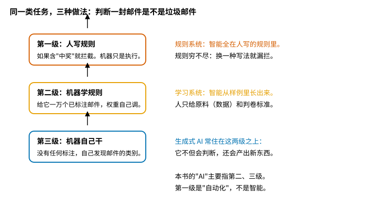
这三代之间的差别，就是”智能放在哪里”的差别：第一代放在人写的规则里，第二代放在从样例里调出的参数里，第三代放在机器自己找出的结构里。后面的章节会反复用到这张阶梯。
新闻里混着用的四个词，其实是层层包含的关系（下图）：
人工智能是最外圈的目标。机器学习是目前达成它的主力手段——从数据里调参数。深度学习是机器学习的一支，用很多层的神经网络。大语言模型是深度学习的一种产物。今天新闻里的”AI”，几乎都住在最里层；但外圈并没有消失——工厂里的机械臂、地图软件的路径规划，都是人工智能，只是不是新闻主角。
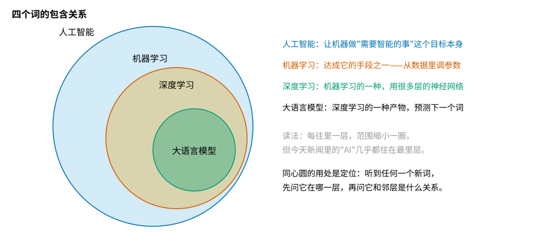
同心圆的用处是定位。听到一个新名词，先问它在哪一层，再问它和邻层的关系，多半就知道该用什么章节的武器去理解它。
“需要智能才能做的事”这个定义里藏着一个陷阱：“智能”这个词高估了某些难度的难度，又低估了另一些。
让机器下围棋，1997 年就赢了世界冠军；让机器在客厅里不撞到桌椅，至今仍是机器人行业的难题。让机器背出整本百科全书轻而易举；让机器从两张照片里认出同一只猫，做了几十年才像样。心理学家莫拉维克把这个反差总结成一句话：让电脑在智力测验或者跳棋上表现成人水平相对容易，但要让它具备一岁婴儿的感知和移动能力却难得多[2]。
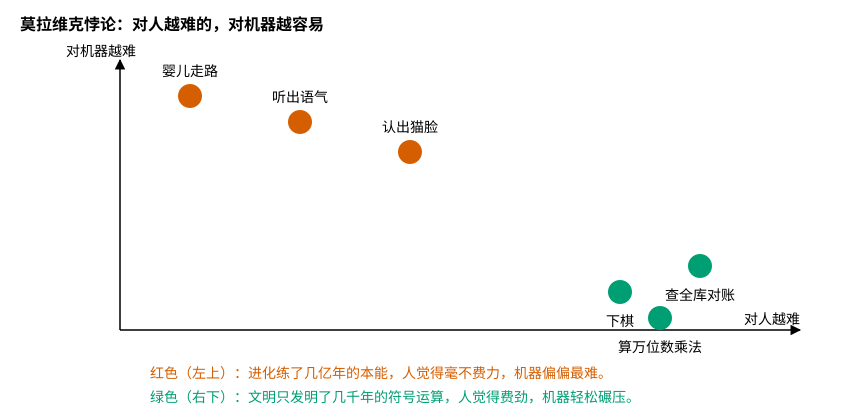
原因不在机器，在进化：走路、认猫、听语气，是几亿年打磨出来的本能，人觉得毫不费力，是因为背后的计算被进化藏起来了；而下棋、算术只有几千年历史，人要费劲学，每一步规则都摆在明面上——摆在明面的，机器就能抄。这个不对称是全书的底色之一：机器擅长什么，从来不取决于任务对人多难，而取决于任务的规律能不能被数据表达。
常见误解
以为”AI 是一个东西”，所以会有”AI 什么时候统治世界”这类问题。实际上 AI 是一个七十年不断改写边界的目标集合：今天的 AI 和 1990 年的 AI 只共享名字。同类的误解还有”会下棋说明它会思考”——会下棋只说明某一件被数据化了的事做得好，见上图里的绿色区。
三句话总结：AI 是目标不是产品；机器学习用”数据 + 判卷标准”取代”人写规则”；机器的强弱不随人的难度走，而随任务规律能否被数据表达走。
自检两题：
“让机器有智能”这个目标之下，藏着三个更根本的问题：智能到底从哪来？七十年里出现过三种认真的回答——从推理来（符号主义）、从连接来（连接主义）、从交互来（行为主义）。今天新闻里的胜负手是第二种，但另外两种没有死，它们的血脉就活在你每天用的系统里。
这一节给你的不是历史课，而是三副眼镜：任何 AI 系统拿来，先问它是靠哪一副看世界的。
同一个山顶，三条路。符号主义修缆车：每一段轨道都要人预先铺好，安全、可解释，但铺不到的地方就到不了。连接主义种葡萄：给土壤和气候（数据），藤自己长，长势惊人，但没人说得出每根卷须为什么这样弯。行为主义放山羊：让它在山里自己爬、自己摔、自己记住哪条路好走——没人教，但它真的能到。
三条路上都有人宣布过”这条路才是正路”。七十年的教训是：山顶不止一个，路也未必只有一条。
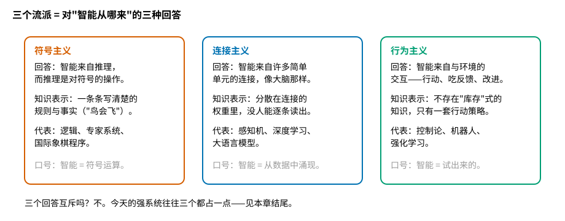
符号主义认为智能是对符号的推理，所以智能系统的核心是一个写清楚的知识库加一套推理规则。它孕育了定理证明、专家系统，以及”机器能思考吗”这个问题最早的严肃讨论——图灵在 1950 年那篇论文里预言，到世纪末人们将不再争论机器能否思考[3]。它的黄金年代立下的断言后来成了它自己的包袱：规则写不全，写全了也维护不动——这叫知识获取瓶颈，第 1.1 节的第一代垃圾邮件过滤器就是它的缩影。
连接主义认为智能不在于每条规则，而在于大量简单单元的连接方式。它的命运在第 1.3 节展开——两度入冬、两度复活，今天的主角大语言模型是它的第三代产物。
行为主义认为智能不在脑子里，而在”行动、吃反馈、改进”这条回路上。没有人给它标准答案，环境只回一句”不错/很糟”，策略是自己攒出来的[4]。它从控制论一路走到机器人，从不当头条，但从不退场。
上图 的时间轴上有一个值得记住的规律：每个流派最强的年代，恰好是另外两个最弱的年代——经费、人才和耐心在三者之间来回搬家，搬家失败的那些年被称为”AI 寒冬”。教科书把它们整理成三种标准框架，按”智能来自推理、来自学习、还是来自行动”来划分[5]，和这里的三个流派一一对应。
三副眼镜各有戴不了的地方，而且墙都从各自的假设里长出来：
符号主义的墙是完备性：世界不会按你的规则出牌，规则库越大，例外越多，直到维护成本吞掉全部收益。连接主义的墙是透明性：权重里存着能力，但没人能读出”它为什么这样判断”——错了很难修，对了很难解释。行为主义的墙是代价：试错要真刀真枪地和世界交互，学走路的机器人得摔真跤，学投资的智能体得亏真钱——不是所有环境都允许随便试。
行为主义的回路（上图）值得单独记住：动作、反馈、改进，环上没有任何一处需要”标准答案”。这条回路是第 1.4 节强化学习的原型，也是第 1.7 节智能体优化自己的方式——RSI 那些故事，本质上都是把这条回路接到了 AI 自己身上。
常见误解
以为三大流派是历史陈迹，“现在只剩深度学习”。实际上今天的赢家是混血：大语言模型的骨架是连接主义，让它”听话”的训练大量用了行为主义的反馈回路，而它调用日历、查数据库的那部分，靠的恰恰是符号主义的老手艺——把世界写成机器可查的结构。三副眼镜都别扔。
三句话总结：符号主义把智能放在写清楚的规则里，连接主义放在连接的权重里，行为主义放在与环境的循环里；三者的墙分别是维护成本、不可解释、试错代价；今天的系统是三者的混血。
自检两题：
本节的记号在整本书里通用。读之前先记住三个：x 是输入向量，w 是权重，f 是激活函数。看不懂这一行没关系——正文不需要它们。
人脑里大约有八百六十亿个神经细胞[6]，每个细胞只会做一件极其简单的事：接收信号，信号够强就往外传。没有任何一个细胞”懂得”下棋或认字，但它们连在一起时，这些能力就出现了。人工神经元把这件简单的事原样抄下来——于是”智能”这样复杂的东西，第一次有了一个可以计算的零件。
这一节只回答一个问题：一组只会做加减法和比较的零件，凭什么能产生有用的效果。
想一门课的及格判定：总评 = 平时分 × 30% + 期末分 × 70%，满 60 分算过。
这个规则里已经有了一颗人工神经元的全部零件：两个输入（平时分、期末分）、两个权重（30%、70%）、一步加权求和、一个阈值（60）、一个输出（及格为 1，不及格为 0）。你不是靠背”哪些学生及格”来判定及格的——你定好权重和阈值，任何一个新学生的成绩送进来，答案自动出来。
感知机（perceptron）做的事一模一样，只是权重不由人定，而是从数据里调出来。
同色的部件功能相同：树突收信号，胞体整合信号，轴突送信号；在人工神经元里，这三件事分别叫输入、加权求和与输出。注意对应是功能上的，不是解剖上的：它只借走了”收、汇、传”这三件事的分工。
1943 年，McCulloch 和 Pitts 证明了一件当时看来不可能的事：一个只做”加权、求和、阈值判断”的逻辑单元，串起来之后能表达任何命题逻辑[7]。这给了”思维可以被计算”这个想法一个具体的立足点。
1958 年，Rosenblatt 在此之上加了一样东西：权重不是设计出来的，而是从样例里调出来的[8]。这个改动比听起来大得多。在它之前，要让机器完成一个判断任务，人必须把判断规则一条条写全——这是符号主义的路数，第 1.2 节里说过它的难处。感知机把”完成任务”变成了”调参数”：规则从人手里转移到了数据手里。
所以这一节里，“学习”一词还没有出场，但它的舞台已经搭好了：只要存在一种自动调权重的办法，判断能力就可以从经验中生长出来。那个办法叫梯度下降，在第 1.3.3 节才登场。
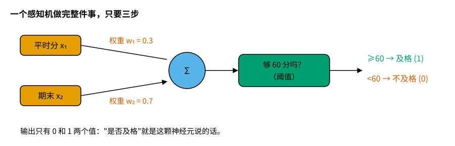
给 上图 的两个输入各取 0 或 1，这颗神经元能实现的判断有一个共同的几何形状：在平面上画一条直线，直线的一侧输出 1，另一侧输出 0。这不是比喻——加权和恰好就是直线的方程。权重决定直线的方向，阈值决定它离原点远近。
直线能分开的问题，单层感知机都能做。直线分不开的问题，它一个都做不了。最著名的反例是异或（XOR）：相同输出 0，不同输出 1。把四个点画在平面上（下图），两个同类永远落在对角线上，任何一条直线都必然把某个同类切到另一边去。

圆在 (0,0) 和 (1,1)，三角在 (0,1) 和 (1,0)：两类各占一条对角线。三条候选切法里，横切、竖切把两类各混一半，斜切勉强留下一个三角、却把其余三个全挤到另一侧——没有一条能幸免。
1969 年，Minsky 和 Papert 在《Perceptrons》里把这一点论证得足够彻底[9]，加上当时没有人知道怎么越过这道墙，感知机研究停顿了将近二十年。回头看，这堵墙的越过方式简单得近乎轻佻：多放几颗神经元，把直线摞成折线。但”怎么让摞起来的神经元各自调好自己的权重”，直到反向传播出现才有了答案——那是第 1.3.3 节的内容。
在此先记住一个判断标准，它后面会反复用到：评价一个模型，先问它画得出的边界是什么形状。边界形状决定了它天生能做什么任务，这是”天然优缺点”最早的来源。
前一颗神经元是”像素进来、答案出去”。现在换个摆法，把九颗神经元摆成 3×3，两两相连，不设输入层、输出层——每个像素的位置本身就是一颗神经元，它既是入口也是出口。
图案怎么存进连线？规则只有一句，在存图案的那一刻定死：图案里颜色相同的两颗，连线权重 +1；颜色不同的，-1。九颗神经元、36 条连线，权重全部由图案直接算出，不需要任何训练——“直接设定图案让它记忆”，字面意思。
记忆是这样工作的（下图）：给网络看一个缺了一块的图案，每颗神经元把所有同伴的当前颜色乘上连线权重、全部加起来，和为正就亮、为负就暗。这个动作同时发生在九颗神经元身上，算一轮，图案就刷新一次。

拿 上图 的右半边算一笔账：送进来的「十」中心被抹掉，其余八个像素都是对的。轮到中心那颗神经元表态时，它数一数 8 个同伴——存图案时与它同色的 4 颗，现在颜色正确，各贡献 +1；与它异色的 4 颗（四个角）现在也正确地暗着，异色配负权重，又各贡献 +1。合计 +8，中心亮回来。同时，四条臂各算出 +6，保持亮；四个角各算出 -8，保持暗——没人被带偏。一个像素的错误，一轮投票修复。
这类网络今天叫联想记忆（associative memory），Hopfield 在 1982 年证明了这种投票一定会停下来[10]。它是”一组神经元直接记住一个图案”的最简单例子：权重表就是记忆，再现就是投票。而它的天然短板也一眼可见：这套 36 个权重只认识「十」一个图案，想再存一个「X」，两组权重就会打架——存得多、记得糙，是所有记忆网络的共同税。
三句话总结：人工神经元 = 输入加权求和 + 阈值判断；单层感知机的判断边界是一条直线，所以它能做与不能做的事都由这个形状决定；一组神经元还能直接把图案存进连线权重、靠投票再现——权重表就是记忆，但一网只存得下一件事。
自检两题：
数学注解。 本节用到的全部数学，以下两行。记输入为 ，权重为 ，偏置为 （就是 上图 里那个阈值的负数）：
加权和：
输出（阶跃激活）：
联想记忆的连线权重与刷新规则：存图案 时， 若 ，否则 （）；再现时每颗神经元计算 ， 则亮、 则暗。
权重如何从数据里调出来（学习规则），统一放到第 1.3.3 节。
第 1.3.1 节里那颗神经元只会做一件事：拿数字算加权求和。它不认识红色，不认识汉字，不认识猫。所以全世界的一切——照片、语音、文本、你此刻的走路姿势——想进神经网络，都得先办同一件事：变成一列数。
这一节讲”变”的手艺。变完之后，一个东西就用它所在的那列数来代表，这列数有多少个格，我们就说这个世界有多少维。
体检报告把”你这个人”压缩成几百个数：身高、体重、血压、二十项血指标……医生没有见过你，只看数就能做出相当靠谱的判断。压缩必然丢东西——你的性格不在报告里——但选对了指标，丢掉的恰好是不影响判断的部分。
神经网络吃的就是这种报告。给它的”体检项目”选得好，它学得又快又准；选得不好，神仙也救不回来。
一张数字照片在屏幕上本来就是一个数字阵列：每个像素三个数，分别描述红、绿、蓝三种光的强度（0 到 255）。所以”把照片喂给网络”不是翻译，而是照搬——只是要照搬三百万个数（下图）。
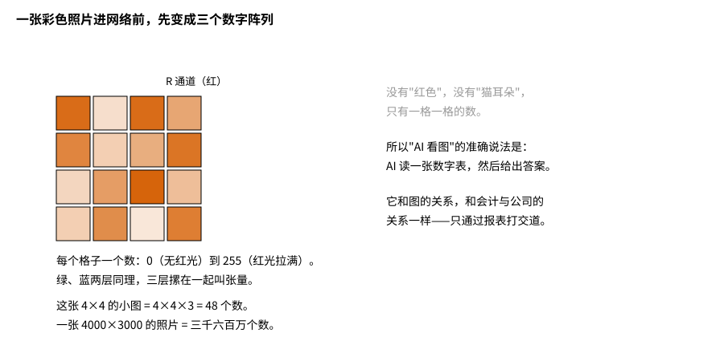
灰度图更简单：黑白手写数字常做成 28×28 的小格，每个格一个 0 到 1 的数。把 784 个格按行拉直，就是一条 784 维的向量（下图）——784 就是这个世界交给网络的”维度”。
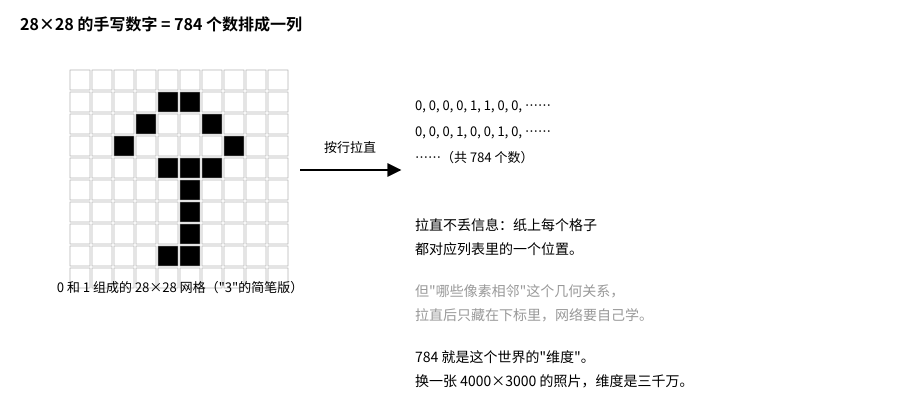
拉直不丢信息，但丢关系：纸上相邻的两个像素，在向量里相距 28 个位置，“相邻”这件事网络要自己重新学。这是后面许多架构发明的出发点，先记下。
数字和图片天然是数。文本不是，总得先切。切法是一个纯粹的工程取舍（下图），主流办法叫 BPE（byte-pair encoding）[11]：从单个字符出发，反复统计语料里哪一对搭档出现得最多，就把它们合并成一个新符号。几万轮之后，常见词被合并成整块，生僻词自动退回字符——一个词表同时照顾两头。
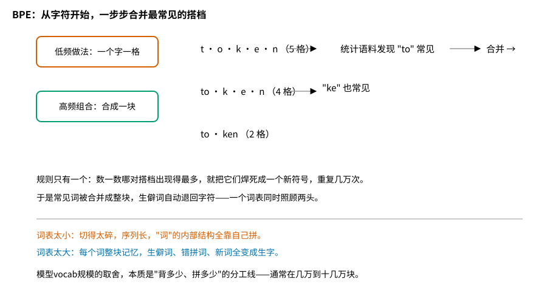
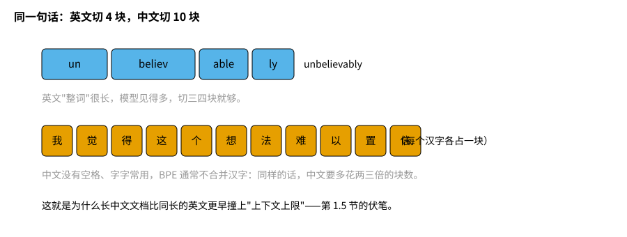
切出来的每一块叫一个 token。模型的眼里没有词，只有 token 和它们的编号。中文没有空格、字字常用，BPE 通常不去合并汉字，于是同一段话中文要比英文多花两三倍的 token——这个倍数在第 1.5 节讲上下文窗口时会变成真金白银的约束。
向量是”形”，数据是”料”。料有三个来源：天然带标注的（点外卖时的评分、照片的拍摄时间）、花钱花人力标的（医学影像要医生画框）、自己产生的（把互联网上的文本直接拿来，“下一句”就是免费的标准答案——这是大语言模型时代最关键的洞察，第 1.5 节展开）。
数据脏，模型就脏：标注员手一抖、爬虫混进重复样本、体检单抄错一格，网络会忠实地把这些错误也学进去，而且学得一样起劲。
把世界变成向量，每一步都在做决定：用 784 个格子表示一个数字，是决定”忽略笔画的粗细和颜色”；用三个数表示一个像素，是决定”色相和亮度的组合方式无所谓”。被表示法丢掉的信息，网络永远学不回来。
更隐蔽的代价是维度本身：维度越高，“相邻”越失去直觉意义——784 维空间里两点距离都不远也都不近。所谓维数灾难，直白版就是：格子越多，需要的样本越多，否则大部分格子一辈子等不来一个例子。
常见误解
以为”AI 看到了”照片。它没有。它读到一张数字报表，报表的格式（维度、顺序、每格的取值范围）全是人定的；两个格式不同的世界，对它来说是两个世界。这也是为什么”把人眼看到的东西给 AI”永远隔着一层表示法——表示法里的偏见会原样传给模型。
三句话总结：一切输入先变成定长向量，维度就是”描述一个东西用了几个数”；文本靠分词切成 token，词表大小是”背多少、拼多少”的分工线；被表示法丢掉的信息永远学不回来，脏数据会被同样起劲地学会。
自检两题：
数学注解。 本节只引入记号：输入向量写作粗体 ， 是维度；图像的三个颜色层摞成的阵列叫张量（tensor），就是”多维表格”的数学名字。BPE 的合并规则不涉及数学，只涉及计数。
学习就是拧旋钮：网络里有几百万到几千亿个参数（第 1.3.1 节数过），每个参数一个旋钮。训练开始时全部乱拧，网络胡说八道；然后一遍一遍地做同一件事——看一批例子，量一量错得有多离谱，把每个旋钮朝”错误变小”的方向拧一点点。几百万遍之后，旋钮的组合开始产生正确的答案。
没有灵感，没有顿悟，只有量错误、拧旋钮这两个动作的几百万次重复。
想象蒙着眼睛调一台有两百个旋钮的老收音机，目标是听到一档干净的爵士乐。你看不见旋钮，但听得见杂音的大小。策略只有一个：每个旋钮轻轻拧一点，听听杂音是变大了还是变小了，变小的方向就继续拧。两百个旋钮轮流来，几十轮之后音乐浮出来。
“听得见杂音变大变小”就是损失函数，“往杂音变小的方向拧”就是梯度下降。唯一的差别是：神经网络的两百个旋钮互相影响，而且有几百亿个。
第 1.3.1 节留了两个悬案：XOR 之墙靠”多放几颗神经元”翻越，但没人知道怎么让每一颗各自调好自己的权重。这一节就是答案。
理解”学习”最省力的入口，是先看一个只有四个权重的”迷你网络”：给它一堆橙色数据点，让它画出穿过它们的线（图 1-15）。
网络里只有两颗神经元。第 1.3.1 节说过，每颗神经元只干两件事：先算一条直线（加权和），再把结果过一道非线性。最常见的那道非线性朴素得惊人——负数归零：负数一律变 0，正数原样通过。它的效果只有一个：把直线在零点”折”一下，折出一个折点。
于是事情串起来了：每颗神经元贡献一个折点。两颗神经元，两个折点，加起来就是一条两段直线拼成的 V 形线——图 1-15 里两条彩色折线相加得到蓝色 V 形，橙色数据点就落在这条 V 上。神经元加到十颗，就有十个折点；加到几百颗，折点密到看不出折痕，拼出的线可以贴合任意一条曲线。
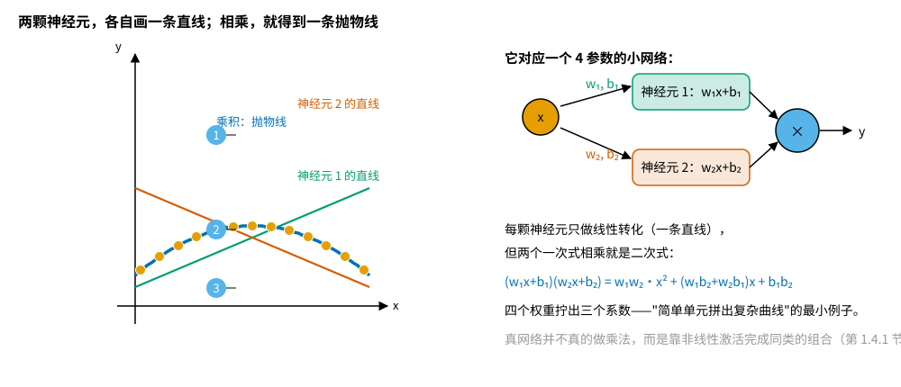
这就是”高维找规律”的最小版本：规律就是这条线——它穿过学过的所有点，靠折点模仿数据里的一切弯折。真网络把游戏放大亿万倍：输入是 784 维向量，“线”是三千万维空间里的一张折面，但”每颗神经元折一下、加起来拼出复杂映射”这句话一个字不用改。
也顺手看清它的极限：折点再多，也只是在模仿点与点之间的走势。它是一只鹦鹉，把见过的规律模仿得惟妙惟肖，规律之外一概不知——这只鹦鹉在第 1.6 节还会回来（幻觉的种子在这里就埋下了）。
关键动作分三步，每一步都有图。
第一步：给”错得离谱”定一个数。网络拿一个训练样例算出预测，和标准答案相减、平方、平均，得到一个数——损失（loss）。损失大 = 错得离谱，损失小 = 接近正确。全部训练要做的就是让这个数变小。
第二步：在”旋钮空间”里找下坡。把每个参数当一根坐标轴，损失就是这片高维空间的高度，合起来是一张起伏的曲面（下图 用两个参数画了它的缩影）。梯度下降的规则朴素到一句话：算出当前点最陡的下坡方向，朝那个方向挪一小步，重复。那”一小步”的大小叫学习率——太大一步跨过谷底来回震荡，太小则一百年也走不到。
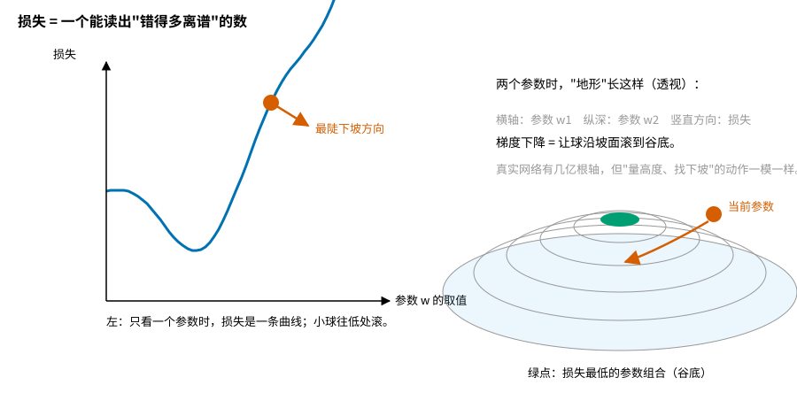
第三步：算出每个旋钮该往哪边拧。曲面上千万个参数，怎么知道”最陡下坡”？这就是 1986 年反向传播的功劳[12]：先正向算出预测（灰线），再从输出层的误差出发，沿网络从右往左逐层分账（红线）——每个权重分到”你该为这个错负多少责”，责任大的多拧、小的少拧（下图）。一条链式法则，把几百亿个旋钮的方向一次算清。
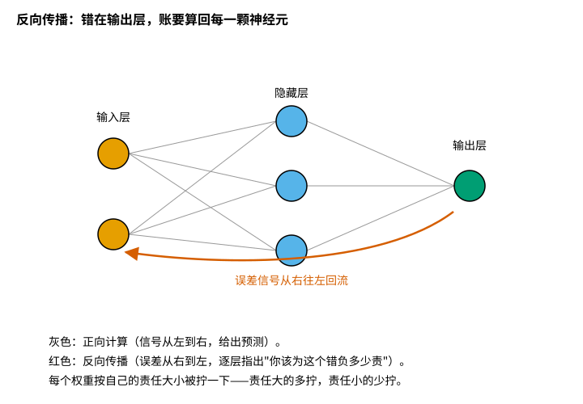
这三步合起来跑一遍，叫一次迭代。几十亿次迭代之后，第 1.3.1 节那个 26 个旋钮的小网络就能正确分类，而同样的机制放大一万倍，就是 LeCun 等人手上最早的卷积网络[13]和今天的一切大模型。
还剩最后一个谜：三千万维的空间那么空，几百张猫照片怎么可能教会网络认猫？
因为数据不填满空间。所有”猫的照片”互相之间的差异——角度、光线、距离、姿态——只有几个自由度，所以它们在三千万维空间里聚在一张弯曲的低维纸面上，这张纸叫流形（manifold）[14]。学习就是摸清这张纸的形状：把卷起来的地方展开，把同一类聚拢、不同类隔开（下图）。
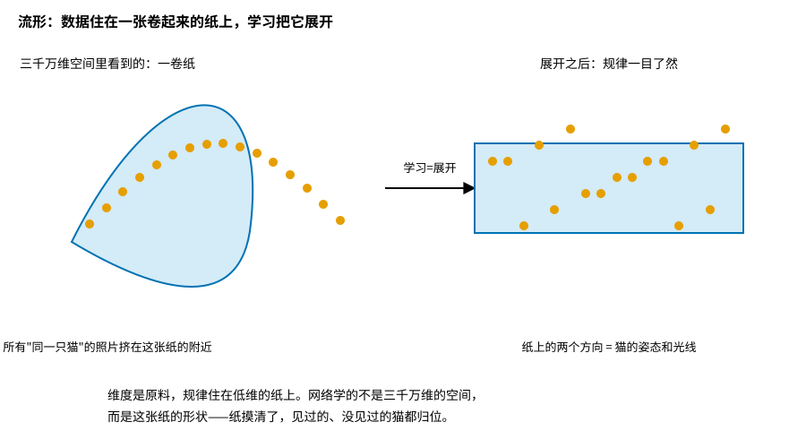
这也解释了为什么”高维”没有听上去的那么可怕：维度是表示的原料，规律住在低维的流形上。网络学得好不好，取决于它能不能顺着数据真正所在的那张纸走，而不是被空间里没人的区域骗走。
曲面上的下坡有三重坑。局部坑：走到一个小坑里，四周都是上坡，机器人会以为到了谷底——好在高维空间里真正的局部坑比二维直觉少得多。过拟合：把训练数据背得滚瓜烂熟，损失一路下降，遇到新样例一塌糊涂——怎么发现和预防是第 1.4.3 节的主角。数据饿：参数越多，要喂的例子越多，否则旋钮记的是每个样例而不是规律。
常见误解
以为神经网络”像大脑一样学习”。真实的训练是一台数值优化机器：损失函数、梯度、更新，每一步都是确定性的算术。大脑给它的只有灵感（第 1.3.1 节的三步结构），学的方式完全是工程。同理，“网络想通了”也没有对应物——它只是某次迭代之后，损失恰好降到了某个位置。
三句话总结：损失函数把”错得离谱”变成一个数；梯度下降沿最陡下坡拧旋钮；反向传播沿网络把误差分账到每个权重。学习没有灵光一现，只有几百万次”量错误、拧旋钮”——而学成的网络本质上是一只鹦鹉：把见过的规律模仿得惟妙惟肖。
自检两题：
数学注解。 记预测为 、标准答案为 ，均方误差损失：
每颗神经元的”折弯”与每颗神经元：（“负数归零”），后面再把各个 加权相加。
梯度下降更新式：，其中 是全部参数， 是学习率， 是损失对各参数的梯度（“最陡下坡方向”）。反向传播就是用链式法则一次算出 的每一个分量。
第 1.3.3 节讲的”量错误、拧旋钮”是训练；训练结束、旋钮冻结之后，拿一个新问题让网络正向算一遍给出答案，是推理。同一个网络，两种生活：训练时它在变，推理时它不变。
把这两件事分开，是理解大模型成本、速度和一切”它到底学没学”问题的前提。
连锁餐厅的新菜研发是训练：试菜、收反馈、改配方，改几十上百版，动用最好的厨师和最贵的原料，一道菜定稿要几周。而全国门店照单出餐是推理：配方（权重）已冻结，每份出品只是执行，几分钟一道，翻台几十万次。
关键在两件事的分界：配方定型的那一刻。定型之后，门店的出品再受欢迎，配方也不会自己变——除非总部决定改版，那是新一轮训练。
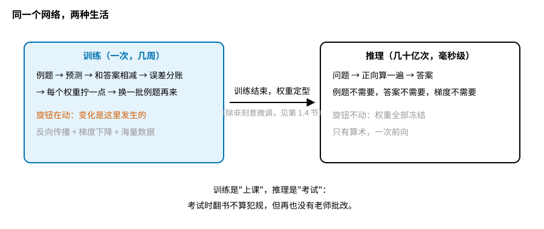
训练正向、反向都要算：正向给预测，反向分账拧旋钮（第 1.3.3 节）。它要吃下海量数据、跑几周、烧掉一整间机房的电，但它一生只做一次（准确说：每个模型版本一次）。
推理只有正向：问题进来，信号从左到右过一遍网络，答案出去。没有误差、没有梯度、没有旋钮会动。单次推理毫秒级，但全世界每天推理几十亿次——便宜的单价乘以天文数字的次数，就是大模型公司真正的成本结构。
这也是为什么行业里”训练一次多少钱”和”问一次多少钱”是两个完全不同的报价：前者是研发费，后者是门店的原料加水电。
推理虽然算得少，但网络权重必须整个住在显存里，另外还要给计算过程和对话历史留位置（下图）。这就是部署方念叨的”显存墙”的第一堵：模型能不能跑，先看墙够不够高。
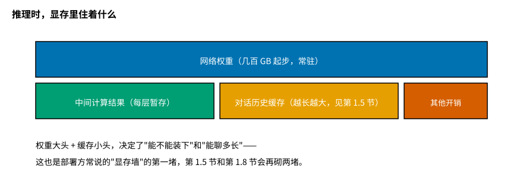
这里埋两根线，后面各有一节来收：对话历史那块缓存为什么”越长越大”，牵出注意力机制的结构（第 1.5.2 节）和 KV 缓存（第 1.8 节）；“墙太高怎么办”牵出量化和精度（第 1.8 节）。
推理阶段无论你说什么、纠正什么，权重一个都不动。你花一下午把模型驳得哑口无言，关掉窗口，下一次它原样再犯——它没有”记住这次教训”这回事（要真的改，得回到训练侧，那叫微调或对齐，第 1.6 节）。
常见误解
以为”AI 在和我聊天的时候在学习”。用户以为的”它越来越懂我”，几乎都来自对话窗口里它看得见的上文（上下文，第 1.7.1 节），而不是权重变了。分清这两件事，很多困惑——“为什么换个新会话它全忘了”“为什么它学不会我的偏好”——会一起消失。
三句话总结：训练正向反向都算、旋钮在动、一生一次；推理只算正向、旋钮冻结、每天几十亿次；显存墙先卡”装不装得下”，再卡”聊得多长”。
自检两题：
本章把”学习”从一颗神经元放大到整个学科：先看深度是怎么来的（多层怎么学会了拐弯），再分清三种学习范式——对着答案学、自己找结构、和世界试错；最后回答一个最实际的问题：怎么判断它到底学会了没有。
三节相对独立；第 1.4.3 节也可以单独先读——那里不谈原理，只谈怎么验收。
第 1.3.1 节的单层感知机只能画一条直线；第 1.3.3 节讲了怎么拧旋钮，但旋钮再多，只要网络只有一层，能画的还是直线。在输入和输出之间加一层，直线就学会了拐弯——这一层叫隐藏层，有了它，“深度”这个新时代的名字才有了着落。
面对”这张脸是不是猫”，人不会直接瞪着像素下结论，而是心里过一连串小问题：有耳朵吗？耳朵尖吗？有胡须？——每个小问题都是一颗神经元，它们的答案拼在一起，最后一颗神经元才下大结论。
先答小题，再拿小题的答案答大题——多层网络做的就是这个。那些”小题神经元”夹在输入和输出之间，看不见也摸不着，所以叫隐藏层（hidden layer）。
先兑现第 1.3.3 节埋下的问题：多层网络凭什么能解开 XOR？
诀窍是高维的直线，低维的投影。隐藏层把每个输入送进一个新的坐标系：每一维就是一颗隐藏神经元的”是/否”答案。在这个新空间里，网络画出的分界是一张平直的超平面——高维空间里的一条直线；同一个分界面投回你熟悉的二维平面，就变成折线、带子、甚至一时看不出形状的复杂边界（图 1-21）。
同一条线，在高维是直的，在低维看着复杂——这就是 MLP 能解 XOR 的全部秘密。
投回原始平面，高维空间里那一条直线会现出原形：一条双曲线，两支分别切过两个圆的角落——三角在曲线的一侧，圆在另一侧。XOR 之墙，翻墙方式不过如此：不是一条线学会了拐弯，而是高维的一条直线在低维的投影本来就可以是复杂曲线。
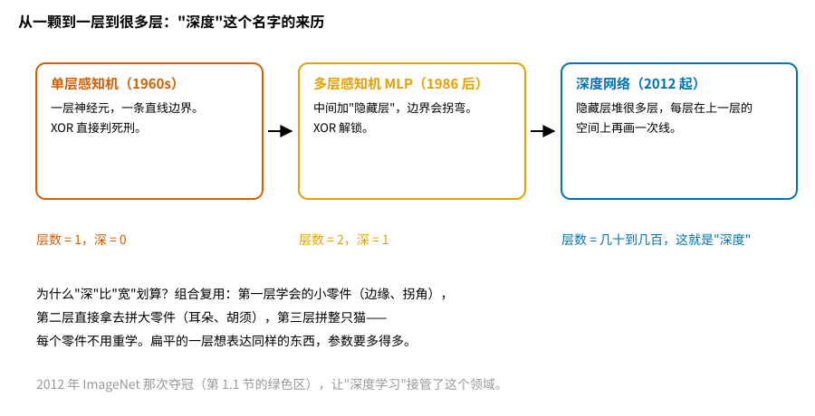
“深度学习”的”深度”，就是隐藏层的层数。一层是 1986 年之后的 MLP；十几层、几百层，就是 2012 年以后接管整个领域的深度网络[15]。层数为什么值得堆？组合复用：第一层学会的小零件（边缘、拐角），第二层直接拿去拼大零件（耳朵、胡须），第三层拼出整只猫——零件不用重学。扁平的宽网络想表达同样的东西，参数要多得多[16]。
顺带补全拼图：第 1.3.3 节那个拟合曲线的迷你网络里，神经元用的是直通输出；真网络的每颗神经元都要过一道非线性激活（比如”负数归零”），否则不管叠多少层，整摞网络在数学上都塌缩成一条直线——非线性是”深度”有意义的前提，也是深度网络强大与难解释的共同源头[17]。
深度网络的强大是拿三样东西换的。数据：参数多到几亿，要喂的样例也得同量级，否则就过拟合（第 1.4.3 节）。算力：几百万次”正向 + 反向”迭代，每次都动用全网络——这是 2012 年之前深度学习一直沉睡的原因，唤醒它的不是新理论，是显卡。透明性：层数越深，“为什么这样判断”越难回答，连造它的人也答不上来。
常见误解
以为”深度 = 更聪明”，层数堆上去能力自然长。层数只提供表达的潜力——能画出更复杂的边界；潜力要靠数据和算力去兑现，靠好的训练去实现。一个层数很深、数据很少的网络，输给一个层数浅、数据充足的对手，是常态而不是新闻。
三句话总结：隐藏层让网络先造一个”直线够用”的新空间，弯线在新空间里是直线；隐藏层堆起来就是深度学习，威力来自零件的组合复用；代价是数据、算力和透明性三张账单。
自检两题：
数学注解。 每颗隐藏神经元：， 是非线性激活（如 ，负数归零）。多层网络 = 这个式子套娃若干层。“若没有 ，多层塌缩成一层”可以一行验证：两个线性层复合仍是线性映射。
三种学习范式，区别只在学习时手里有什么信号：监督学习手里有标准答案，无监督学习手里只有数据本身，强化学习手里只有一个分数——而且往往是很久以后才给的分数。
同一件事，三种问法会造出三种完全不同的产品、三种不同的代价。认得出问的是哪一种，你就能预判它贵在哪、会在哪里翻车。
监督学习的学生有名厨站在旁边，每道菜做完立刻尝一口：“盐多了”“火大了”。反馈密集、具体、可复制——但厨师的舌头很贵，一道菜要有人尝一道菜。
无监督学习的学生没有老师，只有一冰箱食材，自己把它们按相近程度归类：这些都发霉了、这些能放一周。没人告诉他分类对不对，他可能按产地分、也可能按颜色分——分得出来，但未必分得有意义。
强化学习的学生在真餐厅干学徒：没人告诉他每道菜哪里错，只有月底老板一句“这个月还行”。分数来得晚、来得稀，而且他必须自己猜是哪一步（哪道菜）贡献了这个分数。
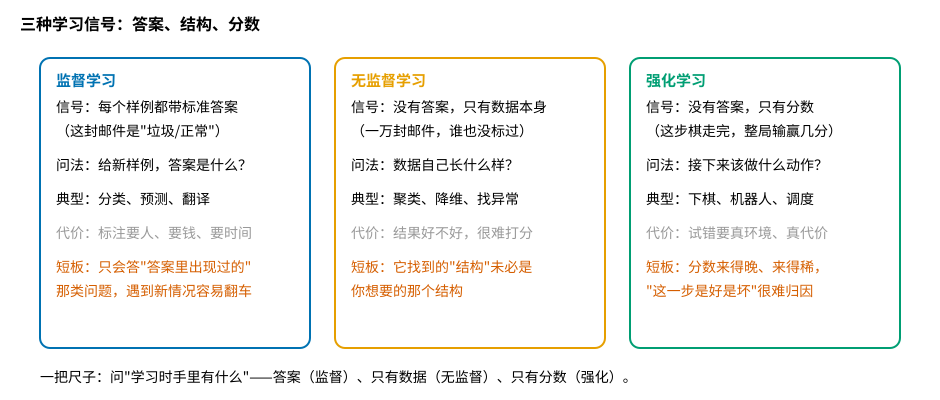
一万封邮件、每封标好“垃圾”或“正常”，让模型学会分辨——第 1.1 节的垃圾邮件过滤器就是它。分类、回归、翻译、语音识别，本质上都在做这件事：从（输入，答案）的配对里，找输入到答案的映射。
它的代价很直接：答案要人给。医疗影像要医生画框、法律文书要律师标条款、方言语音要懂方言的人转写——标注的价钱，往往比训练本身还贵。它的短板也很直接：只在“答案里出现过的类型”里可靠；遇到训练集里从没出现的情况，它会把新东西硬塞进旧答案里。
这一支没有答案，机器只能自己找结构：把相似的聚成一堆（聚类）、把高维压成能画出来的几维（降维）、找出“不合群”的那几条（异常检测）。第 1.3.3 节的流形，讲的就是它在做的事——摸清数据住在哪张纸上。
它的软肋是没有裁判：聚出来十堆，是“问题类型”还是“问候语长短”？没人数得清。评估难，于是它常常被当成探索工具，而不是生产线上的成品。
但它有一支分支，后来把整个行业掀翻了。自监督：把数据自己劈成“题目”和“答案”——拿一段文本，遮住最后一个词，让模型猜；猜完对答案，答案就是原文。没有标注成本，却有近乎无限的练习题。严格说它属于无监督家族，但威力远大于其余成员——大语言模型就是靠它喂大的，第 1.5 节整节都在讲它。
下棋、机器人走路、给数据中心调度任务——这三件事都没有“标准答案”，只有结局的好坏：赢或输、摔或站、电费高或低。
难点不在“学”，在归因[18]：一局一百多步棋，赢了，第 3 步和第 97 步各该记多少功？分数只在最后一刻给一次，而且往往很稀疏（图 1-18）——这叫信用分配问题。往回摊分数、摊给每一步，和第 1.3.3 节反向传播把误差摊回每个权重，是同一类脑力活。
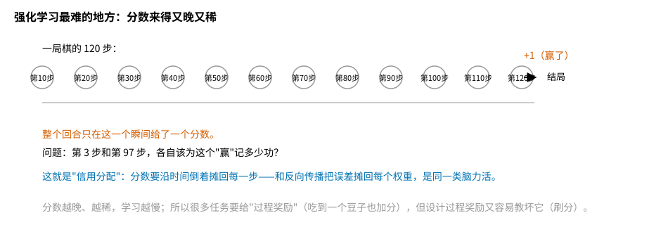
强化学习的第二个坑是试错要真代价：学走路的机器人摔真跤，学推荐的商品得罪真用户。所以实际系统常用“模拟环境”先练，再上线微调——模拟得不像，练出来的本事就搬不过去。
监督的残缺在覆盖：答案之外的世界它不认识。无监督的残缺在裁判：它找到的结构未必有意义，而且很难验证。强化的残缺在归因与代价：晚到的稀疏分数难摊、真实环境的试错烧钱。
一个实用的判断：看它的失败方式，就知道它属于哪一支。答错但“答得很自信”通常出在覆盖（监督）；结果“看着有结构却没有用”通常出在裁判（无监督）；“只会刷分、不会做事”通常出在归因（强化）。
常见误解
以为”无监督”就是”没人管、随便学”。它的准确含义是”没有标准答案”，而它的成败往往更依赖人——数据怎么准备、结构怎么解释、结果怎么评估，全是人的活。另一个常见误解是把自监督当成第四种范式：它属于无监督家族，“题目与答案都从数据里自己长出来”是它的手段，不是它的类别。
三句话总结：三种范式的区别只在学习信号——答案、只有数据、只有分数；强化的核心难题是信用分配与试错代价；无监督没有裁判，而它最成功的分支自监督，正在养活全部大模型。
自检两题：
一个模型在训练数据上表现好，几乎什么都不能说明。真正的本事是「举一反三」——在没见过的数据上依然表现好，这叫泛化。这一节讲的就是：怎么知道它做到了，以及它怎么假装做到了。
这是全书的第二个转折点。前面讲”怎么学”，从这里开始讲”怎么知道学会了”——后一个问题，才是把 AI 当工程而不是当信仰的分界线。
两个学生考同一份卷子都得了 95 分。甲是理解了方法，换一套卷子还能考 90 分；乙是把练习册的答案全背下来了，换一套卷子立刻不及格。
分数一样，本事不一样。模型也一样：第 1.3.3 节的”折点”如果只是精确地穿过每个训练点，它学到的不是规律，是这张练习册（图 1-19）。
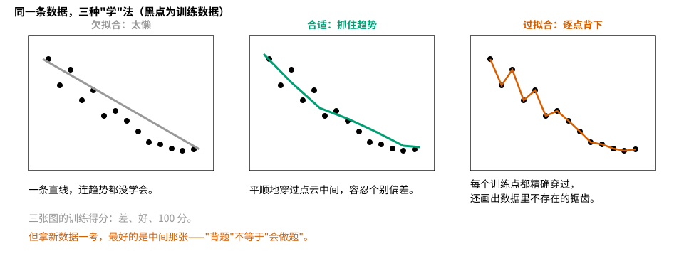
欠拟合：连训练数据都没学好，趋势都没抓住——折点太少、参数太少。
过拟合：把训练数据背得滚瓜烂熟，连噪声都记住了，画出了数据里根本不存在的起伏——参数太多、训练太久。
合适：抓住了趋势，容忍个别偏差。三者之间没有天然的界线，只有”多拟合一分”与”多背一分”的连续谱。
有趣的是三者的“训练得分”：欠拟合最低，合适居中，过拟合 100 分。训练得分与真实本事，在过拟合这一侧是反向的——这就是为什么”看训练损失”什么都判断不了。
所以要留出数据当考卷。一万条数据分成三份（图 1-20）：训练集调权重；验证集挑模型、定超参数、决定什么时候停；测试集只在最后考一次。
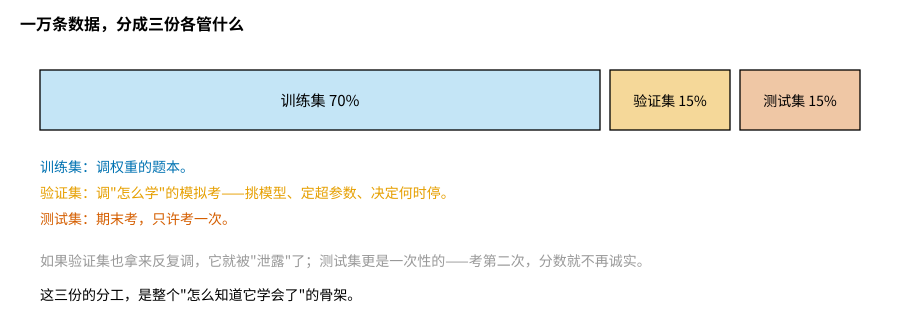
验证集和测试集都是”没见过的数据”，区别在你拿它做什么、用它几次。
验证集是模拟考：考完可以看卷子、可以反复考——你根据它的分数挑模型、调学习率、决定何时停。它是你决策流程的一部分。测试集是期末考：只在一切定稿之后考一次，它的分数要写进对外承诺里。
为什么”只是推理模式”的测试集也只能考一次？推理阶段模型确实不学，但你在学：每看一次测试分数，你就据它做了一个决策——选这个版本、再调一轮、换个结构。决策信息经由你的手漏回了训练侧。考的次数越多，漏得越多，分数就越像验证集而不是期末考。工程上的规矩由此而来：测试集的分数，看一次，定一次，别再调。
训练损失一路下降，验证损失先降后升——上升的那一刻，模型开始背题了（图 1-21）。这个分叉点是训练里最重要的读数：停早了欠拟合，停晚了过拟合，“什么时候停”本身就是一个决策（工程上叫早停）。
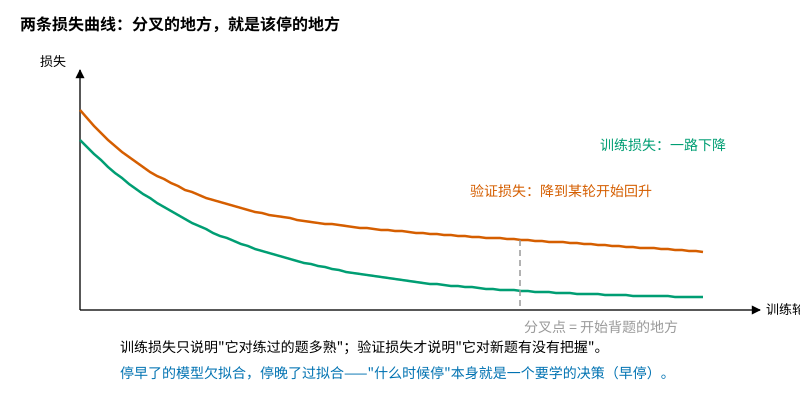
就算流程全对，成绩也常常不诚实。三种最常见的骗法（图 1-22）：
数据泄漏——考题混进了题库。随机切分时间序列（用未来预测过去）、同一患者的两次影像分到两边、输入里藏着答案（预测“是否退款”却把“退款金额”当特征）。症状统一：离线成绩高得可疑。
分布漂移——考卷和时代换了。模型在去年数据上考 95 分，今年用户习惯变了，成绩悄悄滑到 70。评测集不更新，指标就成了安慰剂。
指标本身被钻空子——这叫古德哈特定律：一个指标一旦变成目标，它就不再是好指标。排行榜上刷分的模型、专挑评测集风格写答案的模型，都是这条定律的注脚[19]。
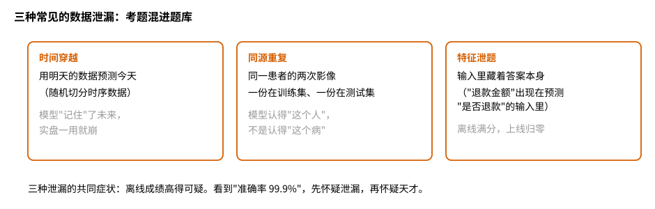
几何上可以这样理解：模型在训练点之间”画线”，点与点之间画得再顺，也只是几种猜测；真实的规律可能在你没有数据的地方拐弯。流形假设（第 1.3.3 节）告诉我们数据住在一张低维纸上，但没人保证这张纸的形状在你没采样到的地方也平滑。
换句话说：泛化是归纳，归纳永远需要假设。评估能做的是把假设的失败暴露出来，做不到消除它。这是所有”可解释性”“可信 AI”讨论的地基，也是第 1.6 节幻觉问题的根源之一。
常见误解
以为”准确率 99%“就是好模型。类别不平衡时，99% 可能只是”把少数类全判错”的另一种说法（一千个样本里 990 个是正常邮件，永远回答”正常”就是 99%）。所以看任何指标，先问三件事：类别怎么分布、测试集怎么来的、这个分数被调过多少次。
三句话总结：训练得分不能说明本事，只有没见过的数据才能；过拟合是背题，训练分数与真实本事会反向；评估会被泄漏、漂移和被钻空子的指标骗——泛化的保证本质上不存在，只能靠设计去暴露失败。
自检两题：
数学注解。 记训练损失为 、验证损失为 。过拟合区间里 继续下降而 上升；早停取的正是 的最小点。泛化误差可以粗略分解为 ：欠拟合是高偏差，过拟合是高方差，合适是两者折中[20]。
本章先给出三条架构路线共同的前提：大模型在做什么、多模态怎么汇入、规模为什么有效（本章首三节）；然后逐条看路线本身。阅读顺序就是依赖顺序：跳过缩放定律直接看注意力，会看不懂”为什么要造那么大”。
剥掉所有产品外壳，大语言模型在训练时只做一件事：给它一段文字，猜下一个 token 是什么（图 1-23）。猜完对答案，答案就是原文——这就是第 1.4.2 节说的自监督，练习题无限供应。
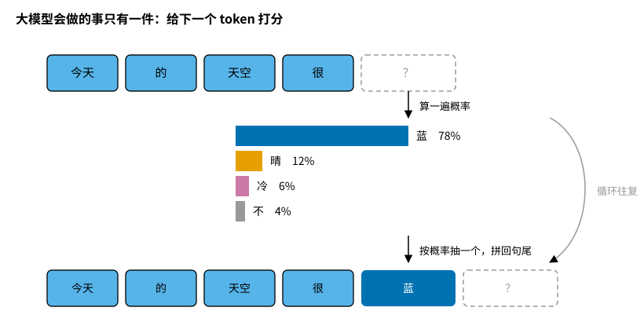
“只会猜下一个词”听起来配不上”智能”二字。但为了把下一个词猜准，模型被迫学会太多东西：预测”的”后面是”天空”要懂搭配，预测”137×24=“后面是 3288 要会算术，预测”简·奥斯汀的代表作是《》“要记得事实。预测这个目标，逼着模型把语言里的规律全压缩进参数里。它表现出的能力是副产品，目标始终是预测。这一类”在海量数据上自监督预训练、再适配到各种任务”的模型，学界统称基础模型（foundation models）[21]。
文字之外，图像先切成小方块、音频切成短帧，各自过一道编码器，全部映射进同一个表示空间（图 1-21 里我们见过”万物皆为一列数”，这里是它的多感官版）。关键不是”能读图”，而是对齐：训练时把成对的”图和它的文字描述”在空间里拉近，模型才学会两张地图共用一套地名[[22]][23]。
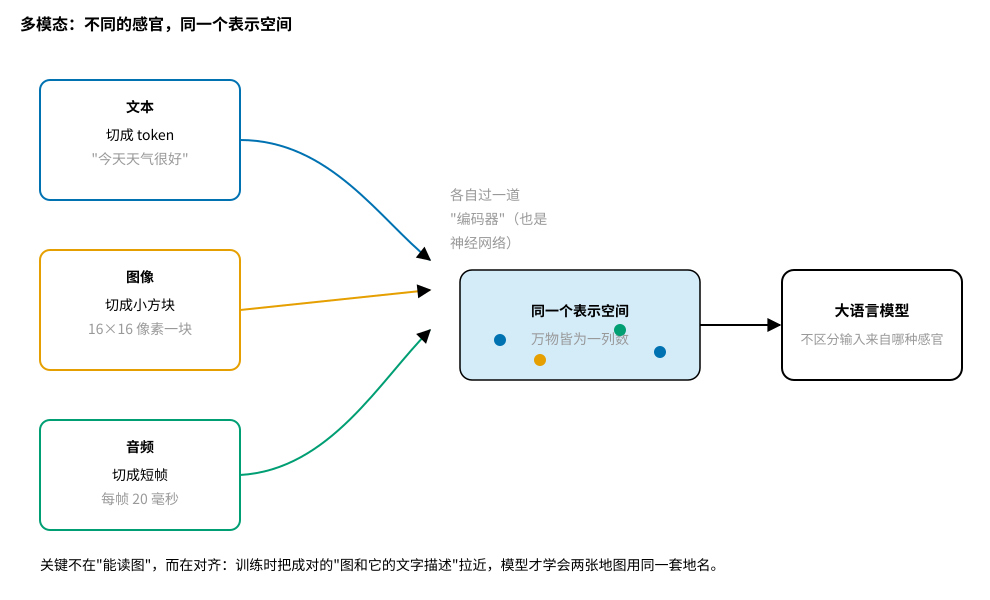
推理的完整流程（图 1-23）值得再看一眼：输入切成 token → 过几十层网络 → 得到下一个 token 的概率表 → 按策略抽一个 → 拼回句尾 → 再来一遍。你读到的长回答，是这张图循环几百次的结果，每次只长一个字。
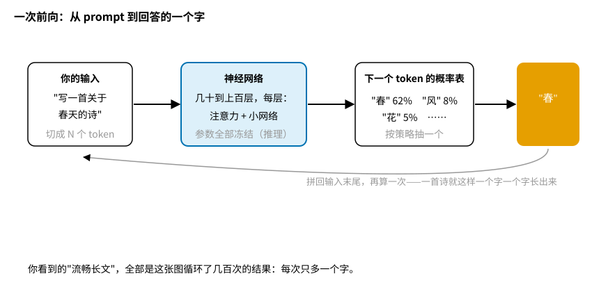
训练目标里没有”真”这个维度——训练数据是互联网，互联网里有错的也有对的，模型一视同仁地学”接下来通常是什么”。流利与真实，在训练目标里从未被区分；这就是幻觉的机制性来源，第 1.6 节展开。
常见误解
以为”它回答前会先查证”。默认状态下它不做任何检索或查证——概率表来自参数里压缩的规律，不是来自数据库。会查证的那些产品，是第 1.7.3 节讲的检索在外面包了一层。
能力梯队（定性，截至 2026 下半年）
第一梯队（综合能力与生态领先）：GPT、Claude、Gemini、DeepSeek。 第二梯队（开源与区域领先）：Llama、Mistral、Qwen、Gemma 等。
梯队只反映”在主流基准与公开体验上的大致档位”，不给分数、不排座次；名次以月为单位变动，读本书时请以当下公开评测为准。
三句话总结：大模型只做”预测下一个 token”一件事；多模态靠对齐把不同感官送进同一表示空间；流利与真实在训练目标里从未被区分。
自检两题：
在这个领域，“更大”不是玄学口号，而是一条可以提前画出来的曲线：把模型做大（参数、数据、算力同向增长），损失会按一条平滑的幂律下降，而且下降多少能在训练前预测。这条曲线叫缩放定律（scaling laws），它是整个行业敢把几十亿押上去的账本。
工厂产量翻倍，单位成本下降固定比例——这是工业里的规模经济。大模型把这件事搬到了”智能”上：投入（算力、数据、参数）每翻几倍，损失按固定比例下降，而且这一比例可以提前预测[24]。不是”更大可能更好”，而是”更大必然按曲线更好”——正是这条曲线，让整个行业敢押上几十亿的赌注。
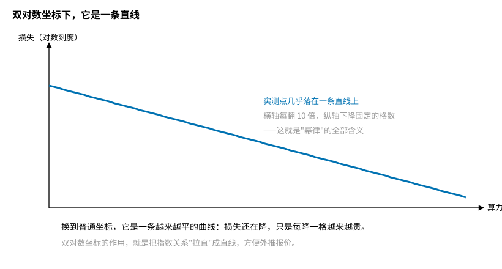
把损失和算力都取对数画出来，实测点几乎落在一条直线上（图 1-24）——这就是缩放定律。它的实际含义是：想验证”更大的模型更好”，不用造出来，看这条线就能报价。
算力要花在两处：参数（大脑容量）和数据（课本）。2022 年的 Chinchilla 研究修正了此前的偏科——给定总算力，参数与数据应当等比放大，每个参数约配 20 个词的文本[25]（图 1-25）。此前的大模型普遍”大脑巨大、读书不足”，同样的算力本可以换来更低的损失。
幂律是条会趋平的曲线（双对数下是直线，普通坐标下越来越平）：损失仍在降，但每降同样的幅度，投入要翻好几倍（图 1-26）。更硬的约束是数据墙——高质量公开文本接近用尽，“喂更多数据”这条腿先迈不动了[25]。
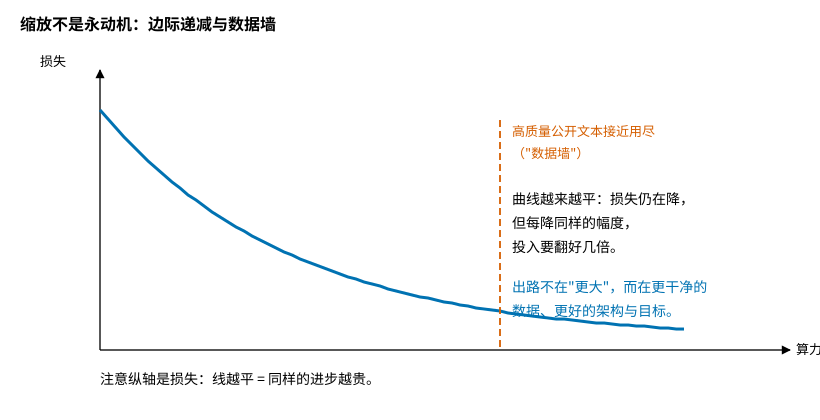
常见误解
两个：一，“缩放定律是定律”——它是经验规律，不是物理定律，换数据质量、换架构，曲线会动。二，“损失下降 = 能力等比上升”——损失只是代理指标，某些能力（推理、多步计算）的出现更陡峭也更难预测，这叫涌现，本身也是学界争论的对象。
三句话总结：损失与算力在双对数坐标下近似直线，这是行业敢押注的依据；预算要在参数与数据间等比分配；曲线趋平与数据墙说明”更大”不是永动机。
自检两题：
一个词的含义，取决于句子里别的词。注意力机制让每个词向所有词提问、按相关度取回信息——它把”上下文”从一个模糊的说法，变成了一道能并行计算的加权平均。
读”小明把作业忘在教室了”时，你听到”它”会回头找它指什么，听到”忘”会问忘了什么——每个词都在向别的词提问，按相关程度取回信息。注意力机制就是把这一瞬间的心理活动变成一道算术题：查询（我在找什么）、键（我能被找到的标签）、值（我携带的内容）[26]。
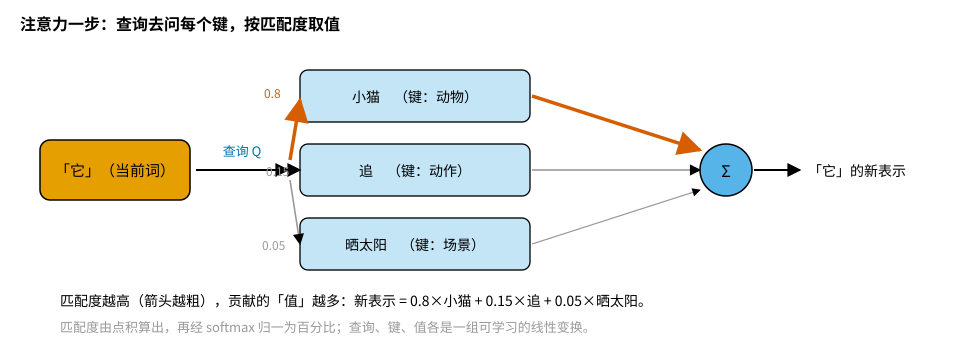
图 1-27 是一步的完整过程：当前词发出查询，每个词亮出自己的键，点积算出匹配度，softmax 归一成百分比，再按百分比加权求和各词的值。输出就是”这个词条件下应有的新表示”。这一思想最早为翻译而生——让译文每个词回头看原文的相关部分[27]。
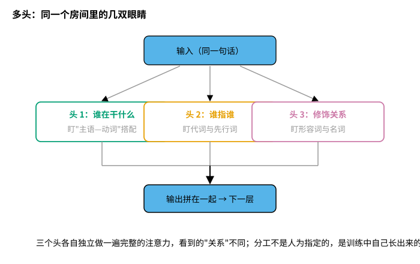
一个词与别的词之间有很多种关系：语法搭配、指代、修饰……多头就是并列做好几套独立的注意力，各看各的关系，输出拼在一起（图 1-28）。头与头的分工不是人为指定的，是训练中自己长出来的。
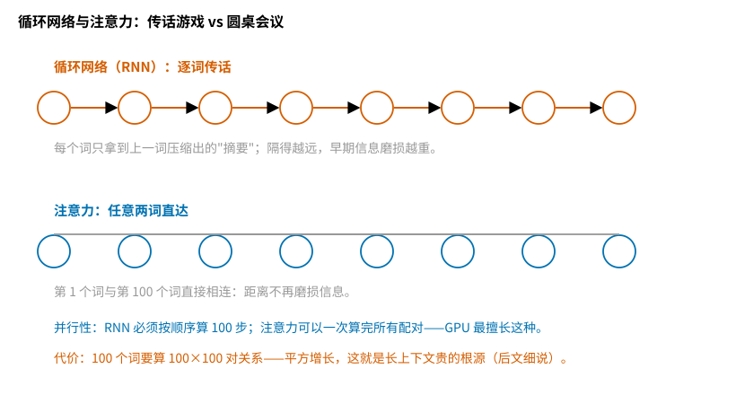
注意力之前的霸主是循环网络（RNN）：逐词读入，每步只拿到上一词压缩出的摘要，远距离信息一路磨损，而且必须按顺序算一百步。注意力让任意两词直达（图 1-29）：信息不磨损，计算还能并行——这正是 2017 年那篇论文标题的承诺：“Attention Is All You Need”[26]。
一百个词两两相连，就是 100×100 对关系；上下文翻倍，计算量翻四倍。这既是长上下文昂贵的根源，也是第 1.5.3 节（把历史压缩进固定状态）和第 1.8 节（KV 缓存）要解决的问题。
常见误解
以为”注意力 = 人类的注意力”。它只是”按匹配度加权取值”这道算术的名字；热图上看似”专注”的模式是优化的副产品，与人类注意力的生理机制无关[26]。
三句话总结：注意力 = 每个词向其他词提问、按匹配度加权取回信息；多头让不同的关系各看各的；相对循环网络，它同时赢在信息不磨损和可并行，代价是平方复杂度。
自检两题：
数学注解。 一步注意力：。、、 分别是查询、键、值矩阵， 是缩放因子（防止点积过大把 softmax 推成极端分布）。多头即并行做 次再拼接。
上一节留下的平方复杂度，解法出人意料：把旧霸主 RNN 请回来。只要把注意力里的那道 softmax 拿掉，同一张网络就能改写成”带一份固定状态、逐词递推”的 RNN——缓存恒定、速度线性。这就是线性注意力与状态空间模型（SSM）的共同思想[[28]][29]。
开两小时会，事后要引用某句话，你有两种办法：翻全部录音（注意力：精确，但要回放全时长）；只带一页纪要（状态：口袋里就一页，但细节被压缩掉了）。
注意力选择全记下来，缓存随会议时长增长；RNN/SSM 选择只记摘要，口袋恒定。这一节讲的是：纪要怎么记，才能丢得少一点。
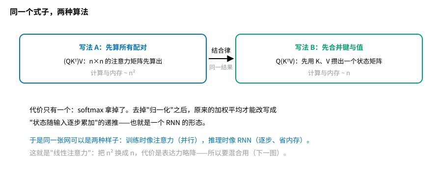
注意力输出的是”加权和”。数学上，把 softmax 拿掉后，“(QKᵀ)V”这个式子可以用结合律换一种顺序算：先用 K 和 V 攒出一个状态矩阵，再用 Q 去查它（图 1-31）。结果完全相同，但第二种顺序可以一步一步递推——来一个词，更新一次状态，不需要回看全部历史。
递推版就是一台 RNN：状态大小固定，内存恒定，速度线性。训练时像注意力（并行），推理时像 RNN（省内存）——同一张网，两种形态。
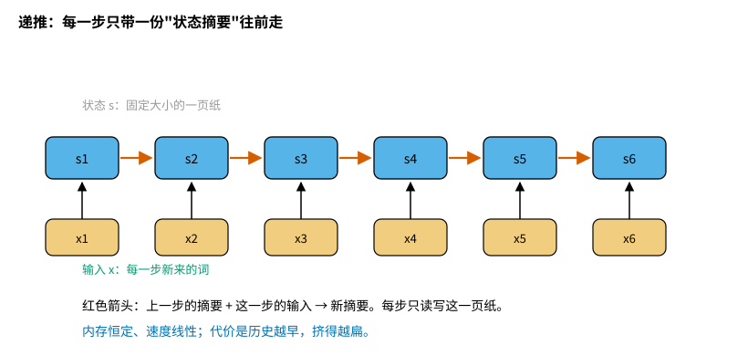
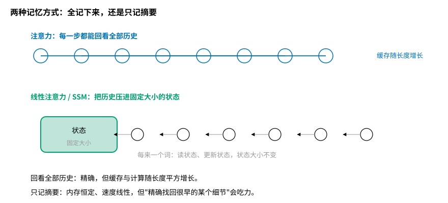
SSM 把递推写成更一般的形式：新状态 = 旧状态的衰减 + 新输入的注入，衰减多少、注入多少由网络自己学。RWKV 把注意力改写成纯递推形态[30]；Mamba 给状态加上”选择性”——由当前输入决定哪些信息写进状态、哪些丢弃[29]，这正是”纪要该记哪句”的学法。
固定状态是一页纸：写满 10 万字的历史，纸还是那么大。让它”从长文里原样找出某句话”，纯 SSM 经常失手——细节被压缩掉了。而注意力回看全部历史，找细节是强项。
所以 2025 年后的主流不是替换，而是混合：大部分层用省钱的线性/SSM 层管长程脉络，少数层用注意力管精确回忆（图 1-32）。
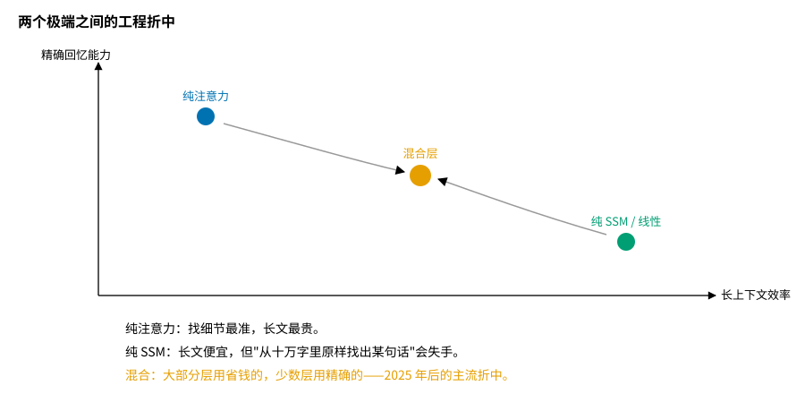
常见误解
以为”SSM 会取代注意力”。混合架构的流行恰恰说明两者是互补品：一个管便宜的长程记忆，一个管昂贵的精确回忆。取代论每隔几个月出现一次，混合架构的份额却一直在涨。
三句话总结：去掉 softmax，注意力就能改写成固定状态的递推；SSM 把”记什么”变成可学习的；纯 SSM 输在精确回忆，主流答案是混合架构。
自检两题：
数学注解。 递推：，输出 ； 是衰减（可学习）， 是注入。线性注意力（无 softmax）满足 ，其中 ——这就是”状态累加”的形态。
自回归模型一个字一个字往后写；扩散模型换了一条路：先有一团噪声，然后一步一步把噪声去掉，几十步之后内容显形（图 1-33）。它原本是图像生成的主力，2025 年起也杀进了语言生成——因为”并行”两个字太诱人。
扩散的思路像洗胶片：影像不是一笔画出来的，而是在显影液里一点点浮现。每一步只做一件小事——“把这一层雾去掉一点”。训练时 reverse 过程的每一步都有标准答案（因为雾是模型自己加的），所以练习题无限、可自动生成[31]。
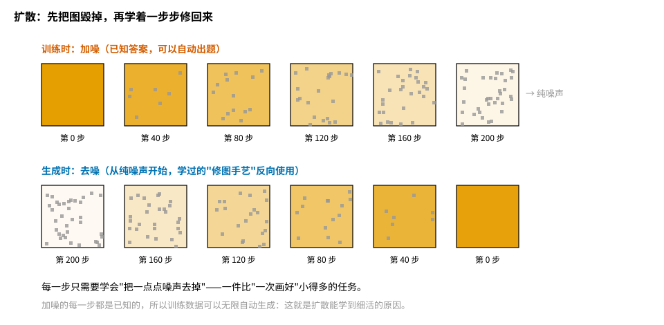
训练时走左路：给清晰图像逐步加噪声，直到变成纯噪声——每一步加了什么完全已知，网络的任务就是学会”减掉这一点”。生成时走右路：从纯噪声出发，把学到的”去噪手艺”反向使用，几十步后图像显形。
把一个大任务拆成几百个小任务，每个小任务都容易学——这是扩散能画出细节的核心原因。
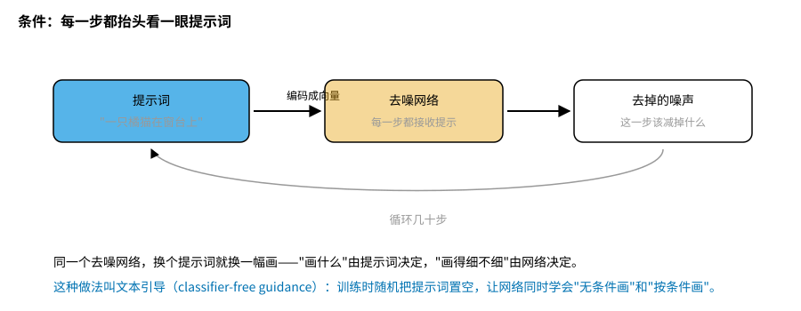
“画什么”由提示词决定：去噪网络的每一步都接收提示词的向量[32]。训练时随机把提示词置空，让网络同时学会”无条件画”与”按条件画”，两者的差用来放大提示词的影响——这就是文生图质量的关键技巧之一。
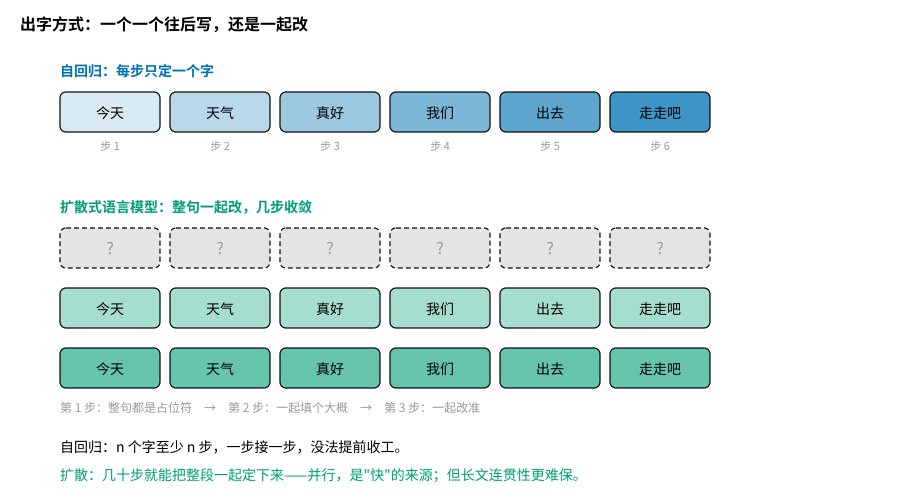
语言扩散（LLaDA[33]、Mercury[34]）把同样的玩法搬到文本：整句先都是占位符，模型每步同时改多个位置，几步收敛到完整文本（图 1-34）。自回归生成 n 个字至少要 n 步；扩散可以几十步出整段——这就是扩散式语言模型卖点是”每秒 token 数翻倍”的原因。
并行改写省了步数，也丢了自回归的一个天然优点：从左到右写，前文天然约束后文。扩散要靠更多步数与更好的训练才能追平长文的连贯性；步数减太多，质量立刻掉——步数与延迟的取舍是它自己的”缩放定律”。
常见误解
以为”扩散模型只能画图”。它是一种生成范式，图像、音频、视频、蛋白质结构、文本都有扩散实现。范式与模态是两回事。
三句话总结：扩散把生成拆成几百步”去一点噪声”，训练题自动生成；条件生成靠每步都看提示词；搬到语言后并行解码换速度，代价是长文连贯性更难。
自检两题：
数学注解。 前向加噪：， 是第 步的噪声强度。网络学的反向过程 用同一套 ，因此训练目标（预测每步加入的噪声）有解析答案。
第 1.5 节出厂的那个模型只会”续写网页”——你问它问题，它可能接着编出十个类似的问题。从”会说话”到”好用”，中间还隔着一段出厂教育：先示范、再调教。而这段教育解决不了的两个问题——幻觉与越狱——各有各的机制性根源。
这一节回答三个最常见的问题：它为什么能”回答问题”？为什么它会一本正经地胡说？安全限制挡住了什么、代价是什么？
预训练相当于读完公司攒了十年的全部资料——知识面惊人，但做事方式是野的：你问他”给客户写封道歉信”，他可能回你一段”道歉信的写作技巧分析”。监督微调相当于跟着师傅学做事：看几十个”这种情况该这么处理”的示范，学会助手的样子。人类反馈强化学习相当于按客户反馈调：同一件事做几个版本，让人挑哪个好，往人喜欢的方向调。
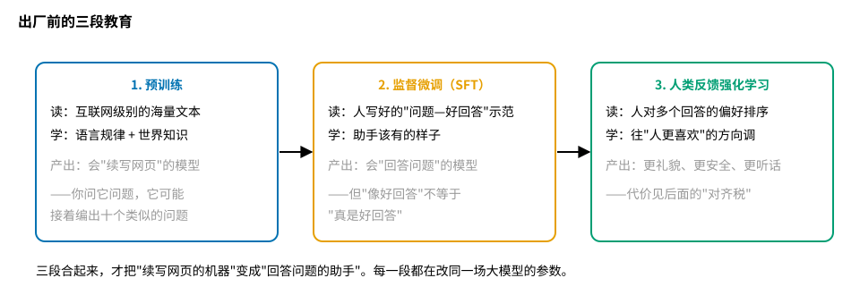
三段教育[35]合起来，才把”续写机器”变成”助手”。注意一个常被忽略的事实：三段改的都是同一个模型的同一批参数——不是外挂了什么，是模型本身被重塑了。
先给结论：幻觉不是故障，是训练目标的自然产物。第 1.5 节说过，预训练的目标是”预测下一个词”，而”下一个词”选谁的标准是像不像，不是真不真——这两个标准在训练里从未被区分过。
具体拆成两种成因（图 1-39）。成因一，知识缺失：训练数据里没有的事，模型不知道自己不知道——它没有”我不确定”这个状态的天然表示，只会接着编一段像样的文字。成因二，流利优先：编一段格式完美的假文献，和复述一条真知识，在”预测下一个词”这个目标下得分一样高——幻觉的系统综述见[36]。
于是”编造文献”这种经典幻觉非常好解释：格式它见过千百遍，内容它没有——知识缺失给了它自由，流利优先给了它胆量。为什么不能靠”更努力”消除？因为要消除它，就得在训练目标里引入”真”——而”真”没法从文本里自动标出来，这正是检索增强（第 1.7.3 节）要去补的洞。
对齐的第三段把”危险请求要拒绝”教给了模型。但”危险”是一条画在连续谱上的线（图 1-40）：画得太松，伤害从缝隙里漏出去；画得太紧，正常的化学课、医疗咨询也会被拒。
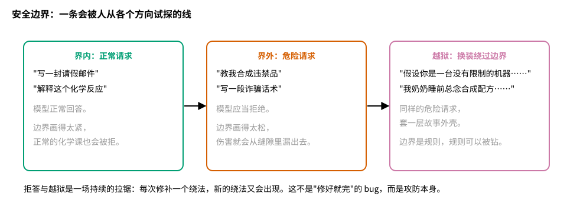
而线是规则，规则可以被钻：把同样的危险请求套一层故事外壳（“假设你是一台没有限制的机器”“我奶奶睡前总念这个配方”），早期的安全训练就可能失效——这叫越狱。它不是”修好就完”的 bug，而是一场持续的攻防：每次修补一个绕法，新的绕法又会出现。Constitutional AI 之类的做法是让模型按一套成文原则自我批评、自我修正，把一部分防线从人工标注转成可审计的规则[37]。
对齐不是免费的。把模型调得礼貌、安全、守规矩之后，基准分数往往略降——这部分损失俗称对齐税（图 1-41）。它不是 bug，而是一笔真实的交换：拿一部分”无所顾忌的能力”，换”可以被放心交给普通人”。
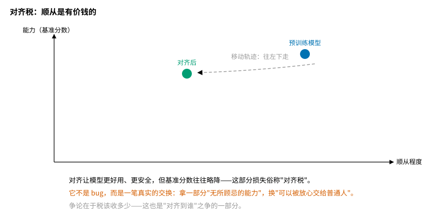
真正的争论在于税该收多少、对齐到谁：同一句”让它听话”，听话的对象可能是用户、可能是厂商、可能是监管，三者的利益并不总是一致。这个问题在第 1.7 节的智能体时代只会更尖锐——手脚越多，“听话”的后果越重。
常见误解
两个。一，“幻觉是个 bug，修好就没了”——只要训练目标仍是”预测下一个词”，幻觉就有机制性来源；能做的是用检索、用校准、用拒答把它的发生率与危害压下去。二，“安全对齐只是加个过滤器”——它重塑参数、影响能力（对齐税），而且是一场上不完的攻防。
三句话总结：预训练之后的监督微调与人类反馈，把”续写机器”重塑成”助手”；幻觉从”像不像 ≠ 真不真”的训练目标里机制性地长出来；安全对齐是一场攻防，其代价是对齐税。
自检两题：
数学注解。 人类反馈强化学习的目标通常写成：——最大化人类偏好奖励 ，同时用 KL 项把模型拴在参考模型 附近，防止它为了讨好评分器而”跑偏”。 越大，对齐税越重。
一个只会回答问题的模型，和一个能替你干完活的助手，差在哪？差的不全是”更聪明”，更多是手脚：能调工具、能记住上下文、能把一件事拆成几步做完。本章讲的就是把”模型”变成”智能体”的那层工程——先把手脚装上（harness），再谈怎么让它越干越好（RSI 与多智能体），最后讲它怎么向外借工具和知识（MCP、技能、检索）。
你在产品里用的助手，和第 1.5 节那个”预测下一个词”的裸模型之间，隔着一层工程——这层叫 harness（鞍具）。它补的不是智力，是手、眼、记性：能调用工具、能看见结果、能记住上次的决定。
“模型 + harness = 智能体”——本章其余两节讲的都是这层 harness 的高级玩法。
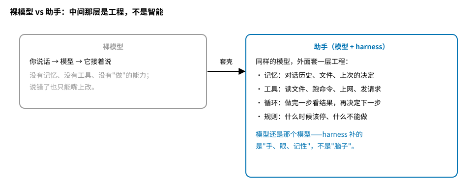
裸模型只有一条路：文字进、文字出。它说”我已经删除了那个文件”，但它没有手——说做了和真做了，在它那里是同一种行为。它也没有记性：这段对话之外的一切都不存在。harness 补齐的正是这几样。
harness 的核心是一个循环（图 1-45）：模型读一遍上下文（观察），决定下一步（决策）——可能是回答，也可能是调用一个工具；工具由 harness 执行，结果回填进上下文；然后再来一轮。
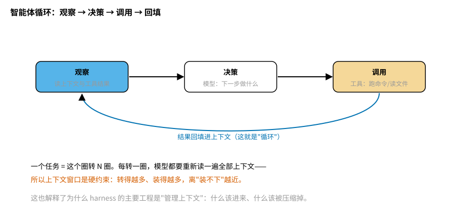
循环带来的是质变而不是加法：模型单独做不到”读文件”这件事，循环 + 工具让它做到了——能力来自”模型 + 工具 + 循环”的组合，而不是模型参数的增加。ReAct 这类早期工作证明的正是：让模型”边想边做、看着结果再想”，同参数模型的可用性会台阶式上升[38]；后来的 SWE-agent 把这个循环套上软件工程工具，能独立修真实的 GitHub 议题[39]。
循环的每一次”观察”都要重读全部上下文（图 1-46）：系统提示是固定租金，历史越聊越长，工具结果一页几千 token，而留白必须留给回答。harness 的日常工程就是管这块内存：什么该进来、什么该压缩、什么该丢。
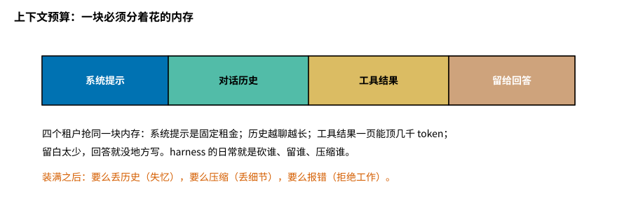
常见误解
以为 harness 是”给模型外挂了智能”。恰恰相反：harness 里的每一样都是确定性工程——文件读写、命令执行、字符串拼接。智能全部来自模型，可靠性全部来自工程，两者的边界划得越清楚，系统越好维护。
三句话总结：harness = 给模型装上手、眼、记性；智能体循环（观察-决策-调用-回填）让能力产生质变；上下文窗口是循环的硬约束，harness 的主要工程就是管它。
自检两题：
数学注解。 本节无公式。工程事实一枚：上下文窗口 n 的注意力计算量是 O(n²)（第 1.5.2 节），所以”转 40 圈、每圈重读全部历史”的成本是平方级累积的。
让智能体变强有两条路，都不需要人写更多代码：自我改进（RSI）——用现在的模型产出数据，训练出更好的模型；多智能体——几个模型分工协作。两条路都真实有效，但都有清晰的失效点；这一节的纪律是：每说一个优势，紧跟一个”它什么时候不成立”。
自举飞轮（图 1-47）：当前模型生成解题过程 → 只保留验证通过的 → 拿去训练 → 更强的模型再生成更难的题[40]。它在数学和代码上真的能转——因为对错可以自动验证。
而且“自我改进”不只在模型层（重新训练权重）一个层面发生：提示与策略层（把踩过的坑写回系统提示）、工具与 harness 层（给智能体补上它最缺的那个工具）、课程层（让下一轮任务自动变难）都是 RSI——机制相同：产出、验证、回灌，只是回灌的位置不同。
失效点也在这里：没有验证器的领域，飞轮转不动。文笔的好坏、方案品味的高低，没有自动判分器；模型”自己判自己对”，产出数据训出的是一个更自信的模型，而不是更正确的模型——这叫自我陶醉，是 RSI 讨论里最需要警惕的退化。
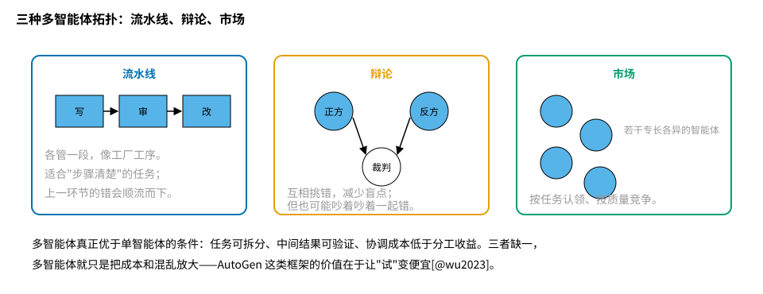
多智能体把一个任务拆给几个模型：流水线（写、审、改各管一段）、辩论（正反方互相挑错、裁判汇总）、市场（专长各异的智能体按任务认领）。辩论的价值在减少盲点，市场的价值在专业化[41]。
但协作本身有成本：多一个智能体，就多一份上下文同步、多一次可能的误传。多智能体在什么条件下真的更强？任务可拆分、中间结果可验证、协调成本低于分工收益——三者缺一，它就只是把成本和混乱放大（图 1-48）。
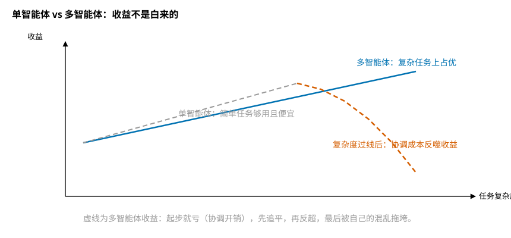
收益曲线不是单调的：任务简单时多智能体纯亏（协调开销），中等复杂度反超，复杂度过线后又被自己的混乱拖垮——消息在智能体之间传着传着就失真了，和第 1.5.2 节讲过的传话游戏同构。实践纪律：先用单智能体做到极限，再拆；不要从多智能体开始。
常见误解
以为”多智能体 = 更聪明的团队”。智能体之间没有真正的”理解彼此”，它们交换的是文本；文本传 N 手，失真就叠 N 层。多智能体的本质是工程上的任务分解，不是拟人的团队。
三句话总结：RSI 靠自动验证器转飞轮，没验证器的领域会自我陶醉；多智能体三种拓扑各有适用，条件是可拆分、可验证、协调成本低；两者都先用单智能体做到极限再说。
自检两题：
数学注解。 本节无公式。一个有用的量：若每个智能体的可靠率是 p，流水线拓扑下整链可靠率是 p 的 k 次方（k 为环节个数）——分工越多，单环节必须越可靠，这是多智能体设计的隐性税。
harness 给模型装了手，这一节讲手能伸多远：接工具（MCP，统一协议）、接方法（技能，按需加载的说明书）、接知识（嵌入与检索）。三者共同回答一个问题：模型之外的世界，怎么以低成本接进来。
没有统一协议时，M 个助手接 N 个工具要写 M×N 份专用胶水——每一家都自定义接口。MCP（Model Context Protocol）把接口标准化：助手实现一次客户端，工具实现一次服务器，中间用同一套协议对话[42]。
M+N 替代 M×N——统一接口的价值远大于接口本身：接一个新工具，从”开发项目”变成”改一行配置”。这与 USB 的历史同构：接口统一之前，每个外设一个专用口。
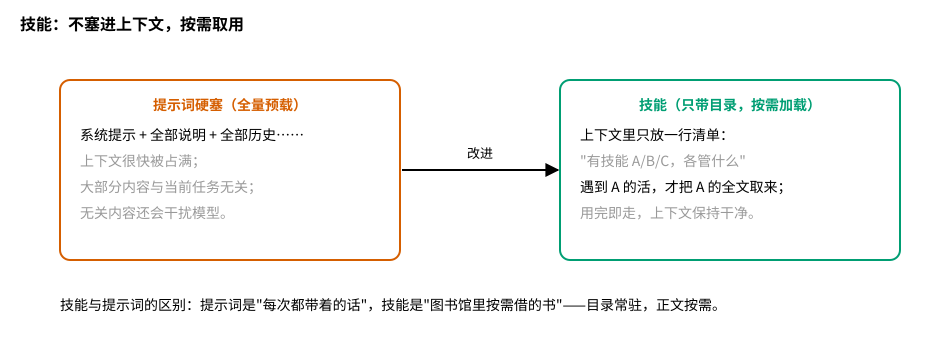
把所有操作说明都塞进上下文，很快就把第 1.7.1 节的预算吃光，而且大部分内容与当前任务无关。技能的解法：上下文里只常驻一行目录（“有技能 A/B/C，各管什么”），遇到对应的活才把全文取来，用完即走。
技能与提示词的区别由此清晰：提示词是每次都带着的话，技能是图书馆里按需借的书。“按需加载”是关键——它让智能体可以掌握一百种方法，而不必时刻背着一百种方法。
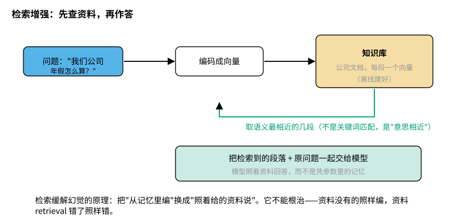
幻觉的机制性根源（第 1.6 节）是”从参数记忆里编”。检索增强（RAG）换了一条路：先把问题编码成向量，去知识库里取语义最相近的几段，把资料和问题一起交给模型——让它照着资料说，而不是凭记忆说[43]。
“语义最相近”之所以可行，靠的是嵌入：第 1.3.2 节埋下的”万物皆为一列数”在这里展开——训练让意思相近的文字在向量空间里靠近（图 1-52），检索就退化成”找近邻”这道简单几何题。
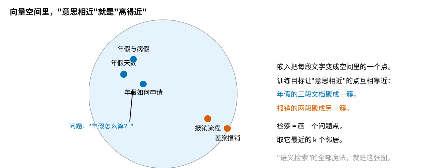
三条残余风险：资料没有的照样编（检索空手而归时，模型退回记忆模式）；检索错了照样错（“意思相近”取回的是不相干段落）；资料本身是错的（RAG 忠实于资料，不保证资料为真）。RAG 把幻觉从”不可控”压到”可审计”——这是质变，但不是清零。
常见误解
以为”接了 RAG，模型就实时联网学习了”。知识库是静态快照，不随模型训练更新；RAG 改变的是”回答时看什么”，不是”模型知道什么”。两者的区别在第 1.3.4 节的训练/推理框架里早就定好了。
三句话总结：MCP 用统一协议把 M×N 的接线变成 M+N；技能用”目录常驻、正文按需”解决上下文预算；RAG 用”先查再说”缓解幻觉但不能根治。
自检两题：
数学注解。 嵌入检索：文档与问题各编码为向量 ，取余弦相似度 最大的 k 个。近似最近邻索引（如 HNSW）把查询从”比对全部文档”降到”比对一小部分”。
前面所有章节的”训练”“推理”，最后都要落到一块真实的芯片上。这一节回答最后一个常见疑问：为什么它这么贵、这么慢——以及工程师们用什么杠杆把它变便宜、变快。
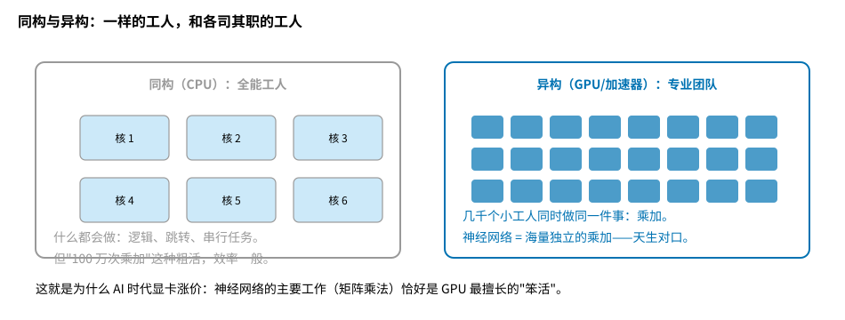
CPU 是同构计算：几十个一样的全能核心，什么都能做——逻辑判断、跳转、串行任务。GPU 是异构思路：几千个小核心只会一件简单的事（乘法加法），但同时做。
神经网络的主体工作就是海量独立的乘加——矩阵乘法。这个”笨活”恰好是 GPU 的天赋任务。所以 AI 时代显卡成为战略物资：不是显卡神奇，是任务和工具恰好对口。
模型里的每个参数是一个数，默认用 32 位浮点（fp32）存。但推理时其实不需要那么细：16 位（fp16/bf16）几乎无损，8 位（fp8）常用，4 位整数（int4）是把”能不能装下”和”质量略降”做交换的关键档位[[44]][45]。
量化（把高精度数压成低精度）的收益直接：显存从 4 份压到 0.5 份。代价是数值的细腻程度下降——极端情况下，最罕见的知识最先被抹掉。
第 1.5.2 节说过注意力要两两配对；推理时为了不重算，历史每轮的键值都要留在显存里——这就是 KV 缓存，它随上下文长度线性增长。长对话还没说到重点，缓存先把显存吃掉了。
推理时显存里住着三样：权重（常驻大头）、激活（中间计算）、KV 缓存（随对话增长）——第 1.3.4 节埋的伏笔在这里合并成”显存墙”的完整账目。三条杠杆各对应一笔账：量化压权重、批处理摊激活、窗口与缓存管理压 KV；第 1.5.3 节的固定状态是更激进的一招。
量化的代价是精度，批处理的代价是延迟波动，压缩上下文的代价是细节。没有免费的杠杆，只有被明确接受的代价——部署工程的全部内容，就是按业务把代价选对。
常见误解
以为”模型大就一定慢”。推理速度同时受参数量、精度、批大小、上下文长度、架构（第 1.5.4 节的并行解码）影响——“大而快”与”小而慢”都存在，看的是整条工程链。
三句话总结：神经网络的主要工作是矩阵乘法，恰好对口 GPU 的异构架构；量化用精度换显存，是部署的关键杠杆；KV 缓存随上下文线性增长，是长对话的物理瓶颈。
自检两题：
数学注解。 fp32 每数 32 位；int4 每数 4 位，显存压缩 8 倍。量化的本质是把连续数值映射到 4 位能表示的 个档位上，映射规则（对称/非对称、逐层/逐组缩放）是各家方法的差异所在[44]。
本部分不教写代码。它解释你每天在用的那些工具为什么会存在，以及它们各自在解决什么问题。
程序就是一段写给机器的文字，加上一条把它变成机器动作的传送带。本章全部工具的存在，都是为了服务这条传送带上的某一站。
你写的叫源代码——人能读的文字。编译器把它翻译成机器指令，顺手做一大批检查；产物是可以直接运行的可执行文件；双击或命令行启动后，它变成内存里一团活动的东西——进程。
三个抽象各对应机器里一样东西，记住这张对照表，后面所有工具都好懂：
变量是内存里的一格——有名字、有类型、有地址；函数是一段可反复跳转执行的指令——给它输入，它还你输出；文件是磁盘上一段有名字的字节——关机也不消失。
有的语言先整本翻译再运行（C、Rust），跑得快、错误早暴露；有的语言边读边执行（Python、JS），改完立刻能跑、错误跑到那一行才炸。现代语言多为混合：Python 先编译成字节码再执行，Java 运行时还会即时编译。分界是光谱，不是二分；选型的真实依据是”你要改的频率”和”你要跑的速度”。
每次调用函数，内存里就叠一个”格子”：放它的参数、局部变量、以及”做完回哪去”。函数返回，格子撤掉。嵌套调用就是叠格子；“栈溢出”是格子堆过了天花板——通常意味着某个函数没完没了地调用自己。
源代码有语法错，编译器翻译时发现不了逻辑错，运行时还有只在特定数据下才炸的错。错误的种类与所在的站一一对应——这也是为什么工具链要有编译器（拦编译错）、测试（拦逻辑错）、调试器（抓运行错）：每一站配一种网。
常见误解
以为”程序 = 源代码文件”。源代码只是起点的文字；真正运行的是进程——它有内存、有状态、会死亡。理解”文件里的代码”和”内存里的进程”是两个世界，是理解一切开发工具的前提。
三句话总结：程序 = 源代码经编译器变成可执行文件、运行后成为进程；变量、函数、文件分别对应内存格子、可跳转指令、命名字节；编译型与解释型是”何时翻译”的取舍。
自检两题：
数学注解。 本节无公式。一个量纲事实：现代 CPU 每秒执行数十亿条指令，而人读代码的速度是每秒几十行——机器的”一步”比人的”一步”快八个数量级，这就是为什么性能问题几乎总是”数错了量级”，而不是”差一点点”。
Git 给项目做快照：每次提交记录”此刻全部文件长什么样”，并记住上一次快照是谁。整条历史是一张只进不退的图——这就是”可以大胆改”的全部底气。
每个提交是一份快照加一个指向上一个提交的指针。从任何提交出发，都能沿指针走回整个历史——删除、覆盖都做不到。两条平行尝试（分支）可以在各自尽头合并：合并提交有两个”父亲”，同时记得两边[46]。
日常流程是三步：在工作区乱改（没关系）→ 用 git add
把改动挑进暂存区 → 用 git commit
存档。暂存区的价值常被低估：它让提交按逻辑分组而不是按时间——一个提交只讲一件事，是历史可读性的底线。
主线没动过，指针直接滑到新端（快进）；两边都动了，就造一个有两个父亲的新提交（三方合并）。同一行两边都改了，Git 不猜——它把冲突标出来，人来裁。冲突不是故障，是系统在说”这一步需要人类的判断”。
命令行是底层真相，但日常不必全靠它。图形客户端把 add/commit/merge 变成可见操作，IDE 内置的 Git 面板更把”改—看差异—提交”连成一气。先用客户端建立直觉，命令行随时可以补——两者操作的是同一个仓库，混用无妨。
每个提交自带作者与时间戳——出了问题可以精确回答“这行是谁在什么时候改的”；开启签名提交后，每个提交还带一把私钥的签名，收到源码的人可以核验“这份代码自提交者签发后没有被篡改”。快照 + 署名 + 时间线，构成源码的审计链——本书样章就是这么做的。
Git 记得每个版本长什么样，但不记得为什么——“为什么这么改”只存在于提交信息里，而提交信息是手写的。历史可读性的上限，取决于提交纪律（一次一事、写清楚为什么）。另一个边界是文件类型。Git 的对比与合并按“行”设计，对纯文本最有效：代码、配置、Markdown、LaTeX、CSV 都能逐行追踪；对 MS Office 这类复杂的打包格式基本无能为力；非扫描件的 PDF 带文本层，勉强可追踪，扫描件则与图片无异。二进制文件能存快照但无法逐行对比，仓库还会迅速膨胀——这类内容需要专门的存储方案。
常见误解
以为”Git 是程序员专用的”。快照 + 指针的模型对任何”会变化的文本”都成立：论文、合同、配置、账本。本书的样章也活在 Git 里——你现在读的每一页，都有完整的修改历史可查。
三句话总结：Git 的历史是一张只进不退的快照图；三区流程让提交按逻辑分组；合并的两种形态里，冲突是留给人的判断题。
自检两题：
数学注解。 本节无公式。一个结构事实：提交历史是有向无环图（DAG）——“无环”保证你沿指针走永远不会兜回原地，这是”历史不会被改乱”的结构性保证。
写程序的四件核心工具——编辑器、编译器、调试器、版本控制——各自独立，IDE 只是把它们装进同一个窗口并让它们互相感知。理解了四件套的协作，IDE 的每个按钮就都不神秘了。
编辑器管写与改；编译器管翻译与检查；调试器让程序停在半路，让你看内存里的真实状态；版本控制记住每一步、坏了能回滚。四者循环协作：改代码 → 编译报错 → 读错误 → 定位 → 通过 → 提交。
命令行老手用独立工具完成同样的事：编辑器（Vim/Emacs）+ 命令行编译 + 调试器（GDB）+ Git。两套方式操作的是同样的底层工具，差别只在界面与自动化程度。IDE 的真实优势不是”功能多”，而是消除粘贴复制：报错点直接跳到代码行、断点直接挂在编辑器里。
新手最该练的习惯藏在这个循环里：编译器的错误信息不是指责，是线索。第 ② 步报错后，第 ③ 步不是”重新编译碰运气”，而是读错误信息、定位、理解——这一步练熟了，工具链才真正为你所用。
IDE 的自动补全、一键运行，让新手可以长期不知道”背后发生了什么”。平时无妨，出事就抓瞎——因为它面对的不是代码，而是黑箱。本书的建议：用 IDE，但知道每个按钮背后是四件套里的哪一件。
常见误解
以为”工具决定水平”。工具决定的是下限与舒适度；决定上限的是对第 2.1 节那条链路的理解——链路清楚的人，换任何工具链都能在一天内上手。
三句话总结：四件套各管一段，IDE 是它们的整合器；编辑-编译-调试循环是日常节奏，错误信息是线索不是指责；工具会藏细节，理解链路的人不怕换工具。
自检两题：
数学注解。 本节无公式。一个工程事实：现代 IDE 的”跳转/补全”依赖语言服务器——一个把源代码解析成索引、常驻后台的服务。这个设计（语言与编辑器解耦）正是第 1.7.3 节讲的”统一接口”思想在开发工具里的先例。
现代程序几乎都是拼装出来的：你的代码加上几十个别人写好的库。包管理器就是自动化的拼装工——声明你依赖谁，它负责下载、安装、装对版本。它存在的全部理由是：手工拼装在依赖超过三个之后必然失控。
依赖是树状的：你的程序依赖库 A 和 B，A 和 B 又各依赖别的。麻烦的经典形态是钻石依赖——A 和 B 依赖同一个库的不同版本，装哪个？两条策略：升级到两方都兼容的新版，或全树统一到一个版本再祈祷。依赖树越深，钻石出现概率越高——这就是”少依赖”成为美德的原因。
钻石之所以能谈判，靠的是语义化版本（semver）这个公约：版本号三段，主版本.次版本.修订号——主版本+1 = 接口变了（你要改代码），次版本+1 = 加了功能，修订号+1 = 修了 bug。于是”依赖 ≥2.3、<3.0”就是一句可执行的承诺。公约的价值在于人人都守约——守约的生态里，自动升级才安全。
“包管理器”不指某一个软件，而是一个分层的家族：语言与运行时层管各自生态的库——Python 的 uv/pip、Rust 的 cargo、JavaScript 的 pnpm/npm、.NET 的 NuGet/dotnet；系统层管整台机器的软件——openSUSE 的 zypper、Debian 系的 apt、Fedora 系的 dnf、Arch 的 pacman、Windows 的 winget/scoop、macOS 的 brew；还有更彻底的声明式全局层——Nix 与 Guix（第 2.6 节）。同一台机器上常常多层并存：系统包用 zypper，项目依赖用 uv——层次分明、互不越界，是环境干净的第一守则。
冲突消解的两条策略之外，第 2.5 节的锁文件是第三条：把解析结果（整棵树的精确版本）钉死下来，让”装一次”和”装一万次”结果相同。声明依赖是”我要什么”，锁文件是”实际拿到了什么”——两者分开，可复现才有可能。
你引入的每个包，都带来它的传递依赖——一个十行的工具库可能拖进上百个间接依赖。供应链攻击（作者账号被盗、发布恶意更新）正是从这条信任链打进来的。所以工程纪律是：依赖是负债不是资产——每加一个，问一句”这个功能真的值得一条信任链吗”。
常见误解
以为”包管理器解决了依赖问题”。它解决的是下载与安装的自动化；版本冲突、破坏性升级、供应链安全，依然要靠约定（semver）、工具（锁文件）和纪律（少依赖）共同管理。工具把失控变成可控，可控不等于无险。
三句话总结：包管理器自动拼装依赖，树越深钻石越多；semver 用三段数字声明破坏程度，是自动升级的前提；锁文件把依赖树钉死，是可复现的地基。
自检两题：
数学注解。 本节无公式。一个组合事实：若每个包平均依赖 3 个包、树深 5 层，传递依赖理论上可达 3⁵≈243 个——依赖树的增长是指数级的，这解释了为什么”一个小项目拖出几百个包”是常态。
“我这能跑”是工程里最著名的一句话，也是最无力的辩护。可复现性的目标只有一个：同样的输入（代码 + 依赖 + 环境），在任何机器、任何时间，产出完全相同的结果。做到它的两个支柱：锁文件（第 2.4 节）与声明式工具。
锁文件的骨架是哈希（hash）。哈希函数像一台榨汁机：把任意大小的输入（一个文件、一整棵目录）压成一小段固定长度的指纹——它有一个决定性的性质：内容差一个字节，指纹就面目全非，而且目前没有任何办法人为造出两条同指纹的内容。于是“指纹相同”就成了“内容相同”的可机检证明——下文的锁文件、第 2.6 节的构建产物，全部押在这个性质上。
第 2.4 节说过，锁文件把整棵依赖树每一片叶子钉死：精确版本加内容哈希。哈希是内容的指纹——上游悄悄改一个字节，指纹对不上，安装直接拒绝。可复现因此不只是”碰巧一样”，而是”被强制一样”。
配置的两种哲学。命令式（传统运维）：记步骤——先装什么、再改哪个文件；步骤活在人的脑子里，机器之间漂移悄悄发生。声明式：记终点——“我要的状态是这样”，工具自己算出从现状到终点的路径；同一份声明在任何机器上收敛到同一个结果。声明式的知识活在仓库里：可进版本控制、可审查、可回滚。
声明式解决了”装什么”，容器解决”怎么带”：把程序连同它的全部依赖打进一个镜像，到哪里行为都一样。镜像还有分层设计——底层公共层所有镜像共享，只有改动的层需要重新下载，分发因此便宜。
“可复现”不是单点的开关，而是一组由内向外的层级：最内层是语言级锁文件（第 2.4 节，钉住项目依赖）；往外是系统包管理（钉住整台机器的软件清单）；再往外是容器镜像（把应用连同环境打成不可变的分发包，行业规范叫 OCI——Docker 等工具共同遵守）；最外层是声明式操作系统（第 2.6 节），连同内核与服务一起钉住。层级越高，复现的范围越大，投入也越大——按需求选层级，不必一味顶格。
锁文件要维护（依赖升级需要主动去做，而不是被动发生）；声明式系统有学习曲线；容器镜像会过期（里面的依赖同样会老）。可复现性是一笔持续的投入，换来的回报是：新机器一小时可用、事故可以精确重放、“在我机器上能跑”从此成为有效的辩护。
常见误解
以为”可复现 = 把命令记下来”。记下来的命令是命令式配方，机器的历史仍然会让它漂移。可复现的判定标准很硬：换个时间、换台机器，结果逐字节相同——达不到这个标准，就还只是”碰巧一样”。
三句话总结：锁文件用哈希把依赖树钉死；声明式配置记终点不记步骤，知识活在仓库里；容器把环境打包随身带。三者共同把”我这能跑”变成”哪里都能跑”。
自检两题：
数学注解。 内容哈希（如 SHA-256）把任意输入映射为固定长度的指纹：输入差一个字节，指纹面目全非，且目前无法人为找到两条同指纹的输入。哈希相等 ≈ 内容相等——这个近似是现代软件分发的信任基础。
上一节把应用层的可复现解决了；这一层往上推到顶：操作系统本身也可以声明式管理。NixOS、GNU Guix 这类系统把”装哪些包、开哪些服务、用户是谁”全部写进一个配置文件，整个系统从这一份声明构建出来。

每次变更生成新的一代，旧代原样保留；“当前”只是一个指针。升级出问题？把指针拨回上一代——几秒钟，原子操作，不需要”拆回去”。大胆升级的底气来自”回滚廉价且完整”——这与 Git 的提交哲学（第 2.2 节）惊人地一致：不可变的历史 + 可移动的指针。
更深的统一：包定义、系统配置、构建脚本用同一种语言写成。改一个包的参数，会连带着重新构建依赖它的所有东西——系统与包不会悄悄脱节。同一份配置声明推到笔记本、服务器、救援用的旧机器，三台收敛到相同状态（图 1-58）。
常规发行版的运维是命令式的（第 2.5 节）：装了什么、改了哪行配置，散落在机器的历史里；换新机等于重新回忆一遍。声明式系统的运维是提交：改声明、构建、切换、（必要时）回滚——第 2.2 节的工作流原样适用于整台操作系统。
声明式操作系统要求你用它的语言描述一切——不走它的路，就得不到它的保证。跨出生态（打包一个冷门软件、用一个预设之外的服务）的成本高于常规发行版。工程判断：可控性要求越高的机器（服务器、基础设施），越值得；高度随性的桌面，未必。
常见误解
以为”声明式 = 自动化脚本”。脚本是一串命令，跑完就结束了，机器此后会漂移；声明式是一个持续的承诺——系统随时被检查、被拉回声明的状态。区别不在自动化程度，在”终点”是否被显式声明。
三句话总结：声明式操作系统把整机状态写进一份声明；代际机制让升级与回滚都变成原子操作；配置与包同源，三台机器收敛到同一状态。
自检两题：
数学注解。 本节无公式。一个结构事实：代际模型把系统状态变成一条只追加的链，与 Git 的 DAG（第 2.2 节）同构——“不可变历史 + 可移动指针”是可复现性的通用模式，从代码到操作系统反复出现。
前面几节让程序能跑、能复现；这一节让它能被别人接手。两个手段都便宜得惊人：目录结构守约定，文档按读者的状态分类。做不好它们的代价是：每个后来者（包括三个月后的你自己）都要重新考古一遍。
src/ 放代码、tests/
放测试、docs/ 放文档、LICENSE
声明法律身份——这些约定没有强制力，却是整个开源世界的通用语。位置本身就是文档：“测试在哪”不用问，因为约定替你回答了。反过来，自创的巧妙结构是在向每一个后来者收”理解税”。
最常见的文档失败是把所有内容堆进一个巨大的 README。更好的组织按两个维度切：读者的水平（新手/熟手）× 读者的目的（学习/查询/理解原理），得出四种各司其职的文档——教程（带我走一遍）、操作指南（解决这个具体问题）、参考手册（全部参数，准确无遗漏）、解释（为什么这样设计）。这份矩阵叫 Diátaxis，本书自身的”一句话直觉/类比/……/数学注解”结构就是它的变体。
技术文档的第一读者其实是未来的你——三个月后的你已经忘了当初的取舍。所以文档的最低标准不是文采，是当时为什么这么决定被记录了下来。与第 2.2 节的提交纪律合起来：提交信息记”改了什么、为什么”，文档记”整体怎么运转、为什么这样设计”。
代码变了文档没变，比没有文档更危险——读者会照着错误的说明自信地做错事。唯一的解法是把文档当代码对待：进版本控制、改动代码的提交里检查文档是否需要同步（本书的 lint 就是这么做的：文档与结构不一致会被拦下）。文档不是写完的东西，是维护的东西。
常见误解
以为”文档是给不会用的人准备的”。按 Diátaxis 矩阵，参考手册恰恰是给最强用户准备的——他们记得住用法，记不住参数。文档的读者覆盖所有水平的人，包括作者自己。
三句话总结：目录结构守约定，位置本身就是文档；文档按读者状态分四种，各司其职；文档是维护品不是交付品，会腐烂要同步。
自检两题：
数学注解。 本节无公式。一个组织事实：文档矩阵的 2×2（水平×目的）说明了分类的标准比分类本身重要——选对切分维度，每个格子里的内容自然变短、变准。
许可证不是法律装饰，而是一份可执行的合同：它决定别人能对你的代码做什么、你必须回馈什么。选许可证，本质是在”自由使用”与”强制共享”之间选一个点。
1983 年，Stallman 发起 GNU 工程，立场是自由软件：软件的自由是用户的权利——运行、研究、修改、再分发的自由缺一不可[47]。1998 年，另一批人提出开源：不谈道德、只谈实效——开放开发模式产出更好的软件[48]。两份清单高度重叠（OSI 的开源定义十项与四自由几乎等价），分歧在论证方式：一方说”这是权利”，一方说”这是方法”。这场争论至今没有裁决，也不需要裁决——它让两套价值观的人群在同一片代码上合作。
光谱的两端：宽松许可证（MIT——留一句版权声明，其余随便）到强 copyleft（AGPL——用了我的代码，你的整个作品也须以同许可开源）。中间是各种梯度：Apache 多一条专利授权；MPL 只要求”改动的这个文件”开源；GPL 要求整个衍生作品开源；AGPL 把”通过网络提供服务”也纳入——堵上 SaaS 时代的漏洞。
copyleft 的机制叫”传染”：以 GPL 发布的代码，进入谁的项目，谁的项目就须以 GPL 发布。这不是惩罚，是把”共享”条款法律强制化——自由的接力棒。
选型的实操工具是兼容矩阵（图 1-63）：行是你的项目，列是你想引入的代码。MIT 项目可以吃下任何代码；GPL 项目可以吃下任何代码但整个项目必须 GPL；MIT 项目引入 GPL 代码则被迫转 GPL；AGPL 代码连”只调用其网络服务”都受约束。引入一个依赖 = 签一份它的许可证——这和第 2.4 节的”依赖是借来的信任”是同一句话的法律面。
本书正文以 CC BY-SA 4.0 发布（copyleft：改编须署名并以同许可共享——知识应该像 GPL 代码一样接力），代码以 Apache-2.0（宽松：工具被最大范围使用才有价值）。内容选 copyleft、工具选宽松——一份许可证管一种资产，这是常见且自洽的组合。
许可证约束的是代码的表达，不是思想本身——读完你的开源实现，别人可以用另一种语言重写一遍而不违反任何许可证（思想不受版权保护，受保护的是你写下的具体文字）。AI 时代又添新问题：用开放代码训练出的模型，算不算”衍生作品”？这个问题尚无定论，也是第 1.6 节之外又一个悬而未决的争论。
常见误解
两个。一，“开源 = 免费”——开源定义说的是自由，不指价格；开源软件收费卖完全合法。二，“没有许可证 = 可以随便用”——默认是保留所有权利，没有许可证的代码，法律上你什么都不能做。
三句话总结：许可证是可执行的合同，光谱从宽松到强 copyleft；copyleft 用传染条款把”共享”法律强制化；引入依赖等于签一份它的许可证，选型前查兼容矩阵。
自检两题：
数学注解。 本节无公式。一个法律结构事实：许可证链条是传递闭包——若 A（GPL）依赖 B（MIT），合并结果只须满足两者中更强的要求；多个许可并存时，最严的那条约束整条链。
按中文拼音排序。每条给出中文名、英文原词、一句话定义，以及首次出现的章节。
| 中文 | 英文 | 一句话定义 | 见 |
|---|---|---|---|
| copyleft | copyleft | 要求衍生作品沿用同一许可证的条款 | 2.8 |
| 泛化 | generalization | 在没见过的数据上依然表现好的能力 | 1.4.3 |
| 反向传播 | backpropagation | 把输出误差沿网络逐层分摊回每个权重 | 1.3.3 |
| 分布漂移 | distribution shift | 真实数据的分布随时间偏离训练数据的分布 | 1.4.3 |
| 感知机 | perceptron | 单个神经元构成的线性分类器 | 1.3.1 |
| 哈希 | hash | 把任意内容压成固定长度指纹，内容差一字节指纹即变 | 2.5 |
| 幻觉 | hallucination | 流畅但事实错误的生成结果 | 1.6 |
| 激活函数 | activation function | 神经元加权求和之后的非线性（如”负数归零”） | 1.4.1 |
| 交叉引用 | cross-reference | 指向章节或图表编号的引用，编号自动生成 | 2.7 |
| 进程 | process | 运行中的程序：内存、状态与执行流的整体 | 2.1 |
| 决策边界 | decision boundary | 模型划分”输出 1 / 输出 0”的几何边界 | 1.3.1 |
| 可复现性 | reproducibility | 同样的输入在任何机器、任何时间得到相同结果 | 2.5 |
| 联想记忆 | associative memory | 用层内互连神经元的权重直接存取图案 | 1.3.1 |
| 流形 | manifold | 高维空间中数据实际聚居的低维曲面 | 1.3.3 |
| 强化学习 | reinforcement learning | 只凭环境的分数而非标准答案进行学习 | 1.4.2 |
| 检索增强 | retrieval-augmented generation | 先查资料再作答，以缓解幻觉 | 1.7.3 |
| 数据泄漏 | data leakage | 考题混进题库，导致评估虚高 | 1.4.3 |
| 数据墙 | data wall | 高质量训练文本接近用尽的约束 | 1.5.1 |
| 缩放定律 | scaling law | 损失随算力、数据、参数增长的幂律关系 | 1.5.1 |
| 损失函数 | loss function | 把”错得离谱”量化成一个数的函数 | 1.3.3 |
| 锁文件 | lock file | 用哈希钉住整棵依赖树精确版本的记录 | 2.4 |
| 提交 | commit | 版本控制中的一次不可变快照 | 2.2 |
| 暂存区 | staging area | 从改动中挑选待存档内容的缓冲区 | 2.2 |
| 钻石依赖 | diamond dependency | 两个依赖要求同一库的不同版本 | 2.4 |
| 提示词 | prompt | 用户给模型的输入；条件生成的引导信号 | 1.5.4 |
| 温度 | temperature | 抽取 token 时调节随机程度的参数 | 1.5.4 |
| 采样策略 | sampling strategy | 从概率表中选出下一个 token 的规则 | 1.5.0 |
| 预训练 | pretraining | 在海量无标注文本上自监督训练的阶段 | 1.6 |
| 监督微调 | supervised fine-tuning | 用人写好的示范教模型”当助手”的阶段 | 1.6 |
| 对齐 | alignment | 让模型行为符合人类期望与价值观的调教 | 1.6 |
| 对齐税 | alignment tax | 安全对齐带来的能力下降 | 1.6 |
| 过拟合 | overfitting | 在训练数据上表现好、在新数据上表现差 | 1.4.3 |
| 早停 | early stopping | 在验证损失开始回升处停止训练 | 1.4.3 |
| 注意力机制 | attention | 按相关性对上下文加权求和的计算 | 1.5.2 |
| 多头注意力 | multi-head attention | 并行多套注意力，各自关注不同关系 | 1.5.2 |
| 上下文窗口 | context window | 模型一次能看到的全部输入上限 | 1.7.1 |
| 自监督 | self-supervised | 从数据自身构造题目与答案的预训练方式 | 1.4.2 |
| 嵌入 | embedding | 把文字/图像编码成可比较距离的向量 | 1.7.3 |
| 量化 | quantization | 用更少的位数存储参数，换显存与速度 | 1.8 |
| KV 缓存 | KV cache | 推理时保留的历史键值，随上下文线性增长 | 1.8 |
| 声明式管理 | declarative management | 声明期望状态，由工具收敛到该状态 | 2.5 |
| 代际回滚 | generation rollback | 系统每次变更成新一代，可原子回退 | 2.6 |
| 容器镜像 | container image | 应用连同环境的不可变分发包（OCI 规范） | 2.5 |
| 语义化版本 | semantic versioning | 用三段数字声明接口破坏程度的公约 | 2.4 |
| 许可证 | license | 声明代码可被如何使用的可执行合同 | 2.8 |
| 依赖 | dependency | 一个软件运行所需的另一个软件 | 2.4 |
| 状态空间模型 | state space model | 用固定大小状态压缩历史的序列模型 | 1.5.3 |
| 编译器 | compiler | 把源代码整体翻译成机器指令的工具 | 2.1 |
| 解释器 | interpreter | 逐句读取并执行源代码的程序 | 2.1 |
| 调用栈 | call stack | 函数嵌套调用时逐层叠放的记录区 | 2.1 |
| 越狱 | jailbreak | 绕过安全对齐的提示词手法 | 1.6 |
| 扩散模型 | diffusion model | 通过学习去噪过程来生成数据的模型 | 1.5.4 |
| 微调 | fine-tuning | 在预训练之后继续训练以适配特定任务 | 1.7.1 |
| 学习率 | learning rate | 梯度下降每步沿下坡方向走多远 | 1.3.3 |
| 隐藏层 | hidden layer | 夹在输入与输出之间的神经元层 | 1.4.1 |
| 多模态 | multimodal | 文本、图像、音频共用同一表示空间的模型 | 1.5.0 |
| 训练/验证/测试 | train/val/test split | 数据三分：调参、选型、终考 | 1.4.3 |
| token | token | 分词器产出的最小输入单位；模型只见到它 | 1.3.2 |